FastAPI
- Repository: github.com/kintsugi-programmer/kintsugi-stack-fastapi
- Documentation: codingismeditation.github.io/exploration/fastapi
Full-Stack Media Sharing App: FastAPI, FastAPI Users, JWT, SQLAlchemy, ImageKit & Streamlit

Project Overview
This project involves building a production-grade, back-end API for a photo and video sharing application, similar to the early days of Instagram. The application allows users to sign in, view a feed of photos and videos (with dates and posting users), and upload media. The backend handles advanced concepts including authentication, authorization, logging in users, connecting to a database, and handling file uploads.
Core Concepts of Web Apps and APIs
What is an API?
API stands for Application Programming Interface. It is essentially a back-end framework running on a secure server that facilitates the access and control of data (like user accounts, image, or video posts). The front-end (or client) is the visual interface users interact with (e.g., a website). The front-end communicates with the API to perform secure operations.
URLs and Endpoints
A URL (Uniform Resource Locator) consists of several core components:
- Domain: The website space (e.g.,
techwithtim.net, ending in.com,.net, etc.). - Path (or Endpoint): The specific route, page, or resource being accessed from the domain (e.g.,
/courses/pythonor/api/post). APIs use custom endpoints to control access to particular resources. - Query Parameter: Extra information used to filter a page or retrieve specific data. It always comes after a question mark
?and multiple parameters are separated by ampersands&(e.g.,?video=123&page=2).
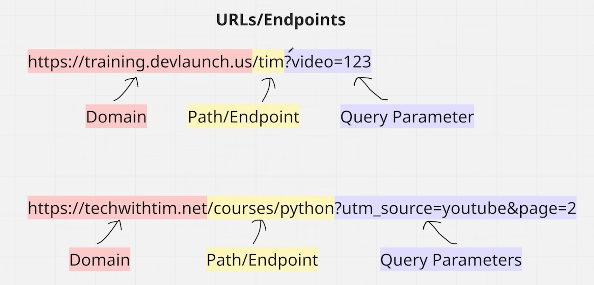
The Request and Response Structure
The communication flow between a front-end (client) and back-end (API) is handled via Requests and Responses.
Request Components (Client to API):
- Type / Method: Indicates what the front-end wants to do.
- GET: Retrieve data.
- POST: Create new data.
- PUT / PATCH: Update existing data.
- DELETE: Delete data.
- Path: The endpoint being accessed.
- Body (Optional): Additional data sent with the request (e.g., an image being uploaded, a post caption).
- Headers: Additional information, typically related to authentication (e.g., tokens indicating the user is signed in).
Response Components (API to Client):
- Status Code: A number indicating the outcome of the request.
- 200: OK / Successful.
- 201: Created successfully.
- 204: Updated successfully.
- 404: Not found.
- 403: Unauthorized / Permission required.
- 500: Internal server error.
- Body: Additional data returned to the front-end (e.g., the requested post data). Format is often defined by the headers.
- Headers: Security information, authentication details, or data types (e.g.,
application/json).
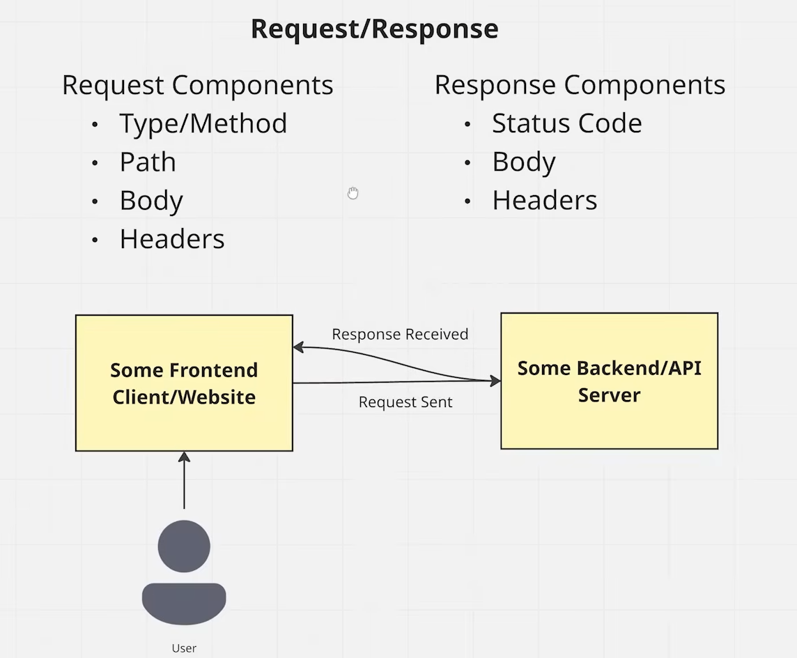
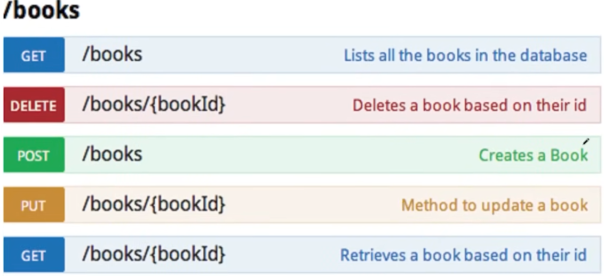
Simple APIs Example
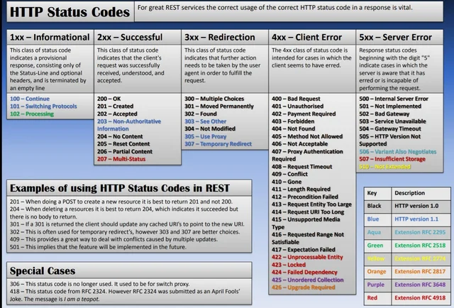
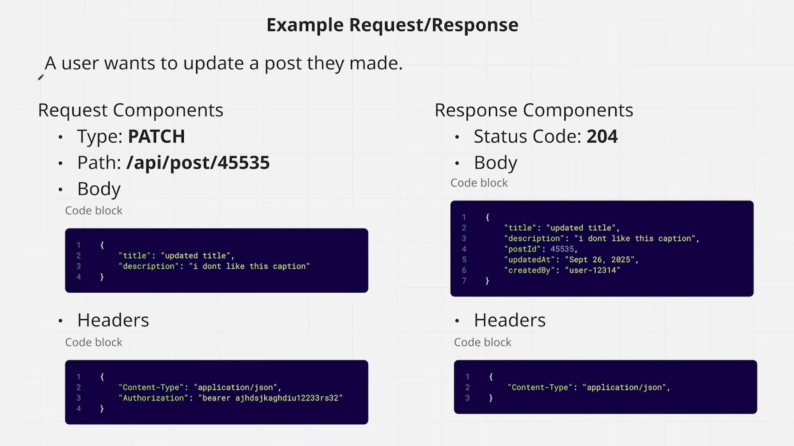
JWT Authentication Primer
JWT (JSON Web Tokens) are used for authenticated APIs to identify users and verify authorizations securely.
- A user logs in by sending their username and password to an authentication endpoint.
- The API verifies the credentials and returns a signed JWT token (a random string identifying the specific user).
- The client stores this token and sends it along in the headers of all future requests.
- The API verifies the token on every request to ensure the user has permission to perform the action.
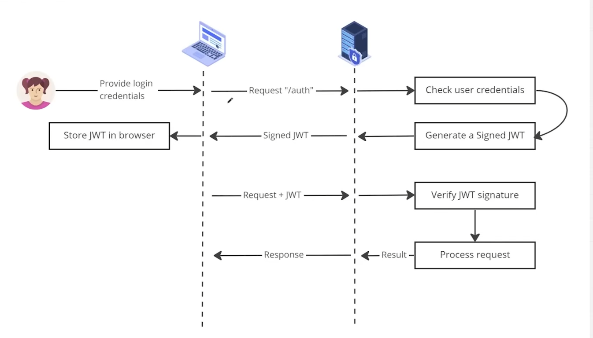
Environment and Setup
Project Initialization
It is highly recommended to use PyCharm for heavy Python projects due to its support.
- Open a new folder in your editor.
- Use a package manager like
uv(a modern, highly efficient alternative topip) to initialize the project and isolate dependencies.
python3 -m venv .venv # creates a virtual environment
source .venv/bin/activate # activates the virtual environment
pip install uv # installs a package with pip
pip install -r requirements.txt
main.py and a pyproject.toml file.
Installing Dependencies
Run the following commands to install necessary dependencies:
uv add fastapi # adds this dependency to the project
uv add python-dotenv # adds this dependency to the project
uv add fastapi-users[sqlalchemy] # adds this dependency to the project
uv add imagekitio # adds this dependency to the project
uv add uvicorn[standard] # adds this dependency to the project
uv add aiosqlite # adds this dependency to the project
uv add streamlit # adds this dependency to the project
Environment Variables (.env)
Sensitive credentials, tokens, and keys must be stored in a .env file.
Create an account on ImageKit (a free service for hosting, managing, and optimizing images/videos as a Digital Asset Management system). Retrieve the public key, private key (requires account password confirmation), and URL endpoint from the developer options.
Create a .env file in the root directory:
IMAGEKIT_PRIVATE_KEY=your_private_key # stores ImageKit private credential
IMAGEKIT_PUBLIC_KEY=your_public_key # stores ImageKit public credential
IMAGEKIT_URL_ENDPOINT=your_url_endpoint # stores ImageKit API endpoint
Creating the FastAPI Application
Scaffolding
Create a directory named app (or src/app) to hold the application code, and inside it, create an app.py file. This file initializes the FastAPI instance.
from fastapi import FastAPI # imports FastAPI classes used below
app = FastAPI() # creates the FastAPI application instance
Creating Your First Endpoint
Endpoints are defined using decorators containing the HTTP method (e.g., @app.get) and the path. FastAPI functions typically return a Pydantic object or a Python dictionary (which represents JSON - JavaScript Object Notation).
@app.get("/hello-world") # registers a GET route
def hello_world(): # defines a simple test endpoint
return {"message": "hello world"} # returns a JSON message response
Running the Server with Uvicorn
Modify the root main.py file to run the application using Uvicorn, an asynchronous web server.
import uvicorn # imports Uvicorn server runner
if __name__ == "__main__": # checks a condition before next step
uvicorn.run("app.app:app", host="0.0.0.0", port=8000, reload=True) # starts ASGI server with app target
"app.app:app": Targets theappvariable inside theapp.pyfile within theappdirectory.host="0.0.0.0": Runs the server on any available domain (accessible via localhost127.0.0.1or the machine's private IP address on the network).port=8000: Specifies the port.reload=True: Automatically shuts down and restarts the server anytime changes are saved, which is highly useful for debugging.
Run the server via the terminal:
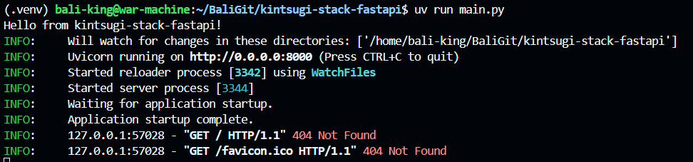
http://localhost:8000/ # shows local endpoint URL to open
{"detail":"Not Found"} # shows sample API JSON response
Interactive Documentation
FastAPI automatically generates comprehensive documentation allowing you to execute and test endpoints directly from the browser.
- Swagger UI: Navigate to
/docsto see endpoints, configuration, and a "Try it out" button for sending test requests. - ReDoc: Navigate to
/redocfor an alternative, modern documentation view.
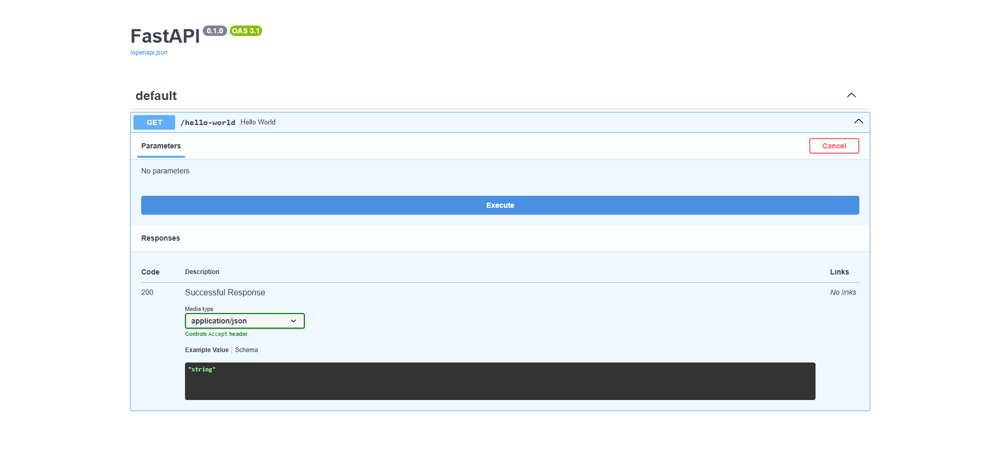
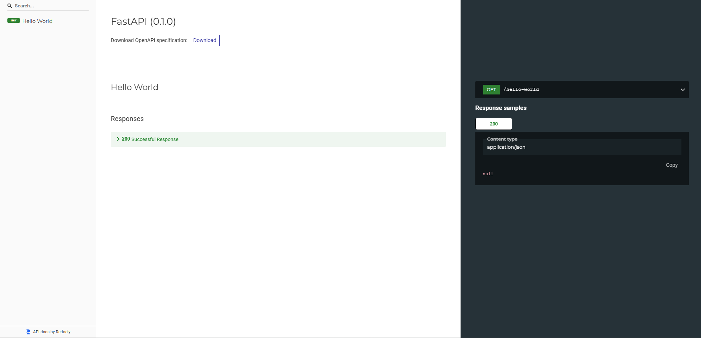
from fastapi import FastAPI # imports FastAPI classes used below
application = FastAPI() # creates the FastAPI application instance
@application.get("/hello-world") # registers a GET route
def hello_world(): # defines a simple test endpoint
return {"message":"hello world !!!"} # returns a JSON message response
text_posts = { # creates in-memory sample post data
1 : {"title":"new post", "content": "cool test post"} # shows this line as part of the example output
} # shows this line as part of the example output
@application.get("/posts") # registers a GET route
def get_all_posts(): # declares a helper or endpoint function
return text_posts # returns data to the API caller
import uvicorn # imports Uvicorn server runner
def main(): # declares a helper or endpoint function
print("Hello from kintsugi-stack-fastapi!") # shows this line as part of the example output
uvicorn.run("src.app:application",host="0.0.0.0",port=8000,reload=True) # starts ASGI server with app target
if __name__ == "__main__": # checks a condition before next step
main() # shows this line as part of the example output
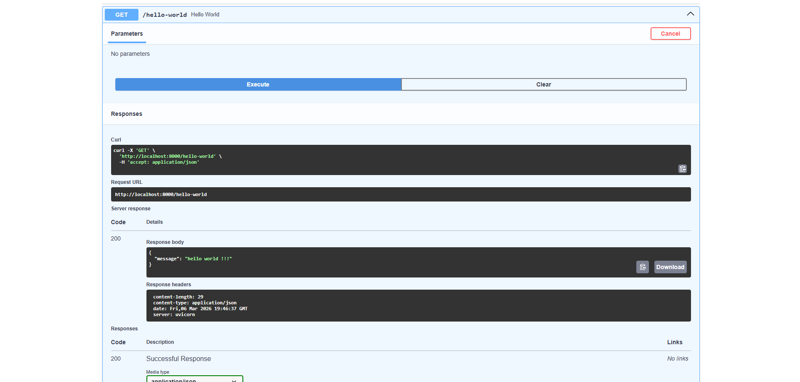
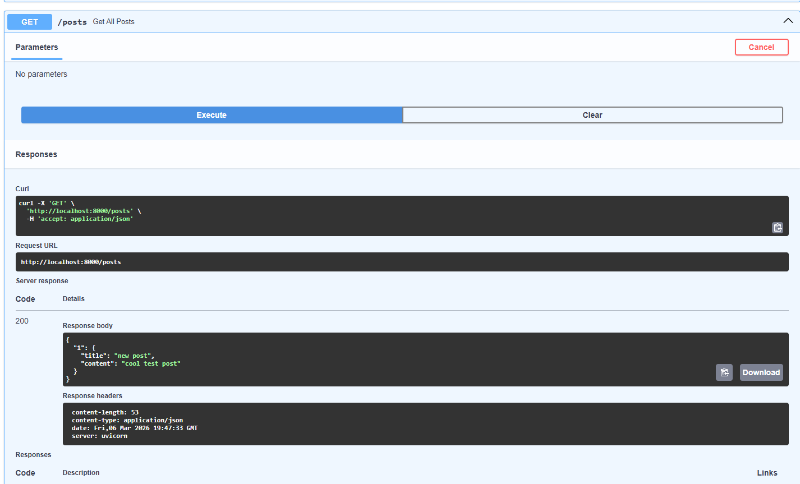
Routing and Parameters
Path Parameters
Path parameters are dynamic values placed in the URL (enclosed in curly braces {}) to filter specific resources. Providing Python type hints (e.g., id: int) enables FastAPI's automatic data validation; it will reject invalid data types.
from fastapi import HTTPException # imports FastAPI classes used below
text_posts = {1: {"title": "new post", "content": "cool test post"}} # creates in-memory sample post data
@app.get("/posts/{id}") # registers a GET route
def get_post(id: int): # declares a helper or endpoint function
if id not in text_posts: # checks whether the post exists
raise HTTPException(status_code=404, detail="post not found") # returns an HTTP error for invalid request
return text_posts.get(id) # returns data to the API caller
from fastapi import FastAPI, HTTPException # imports FastAPI classes used below
application = FastAPI() # creates the FastAPI application instance
@application.get("/hello-world") # registers a GET route
def hello_world(): # defines a simple test endpoint
return {"message":"hello world !!!"} # returns a JSON message response
# text_posts = { # assigns value for later use
# 1 : {"title":"new post", "content": "cool test post"} # shows this line as part of the example output
# } # shows this line as part of the example output
text_posts = { # creates in-memory sample post data
1: {"title": "Morning Coffee", "content": "Started the day with a strong cup of coffee."}, # shows this line as part of the example output
2: {"title": "Learning FastAPI", "content": "Building my first API with FastAPI today."}, # shows this line as part of the example output
3: {"title": "Debugging Code", "content": "Spent an hour fixing a small bug."}, # shows this line as part of the example output
4: {"title": "New Project Idea", "content": "Thinking about building a health tech platform."}, # shows this line as part of the example output
5: {"title": "Database Setup", "content": "Installed PostgreSQL and created a new database."}, # shows this line as part of the example output
6: {"title": "API Testing", "content": "Testing endpoints using Postman."}, # shows this line as part of the example output
7: {"title": "Late Night Coding", "content": "Still coding at midnight."}, # shows this line as part of the example output
8: {"title": "Learning Git", "content": "Practicing commits and branches today."}, # shows this line as part of the example output
9: {"title": "Reading Docs", "content": "Reading FastAPI documentation."}, # shows this line as part of the example output
10: {"title": "Weekend Build", "content": "Working on a small backend project."} # shows this line as part of the example output
} # shows this line as part of the example output
@application.get("/posts") # registers a GET route
def get_all_posts(): # declares a helper or endpoint function
return text_posts # returns data to the API caller
@application.get("/post/{id}") # registers a GET route
def get_post(id:int): # declares a helper or endpoint function
if id not in text_posts: # checks whether the post exists
raise HTTPException(status_code=404, detail="post not found") # returns an HTTP error for invalid request
return text_posts.get(id) # returns data to the API caller
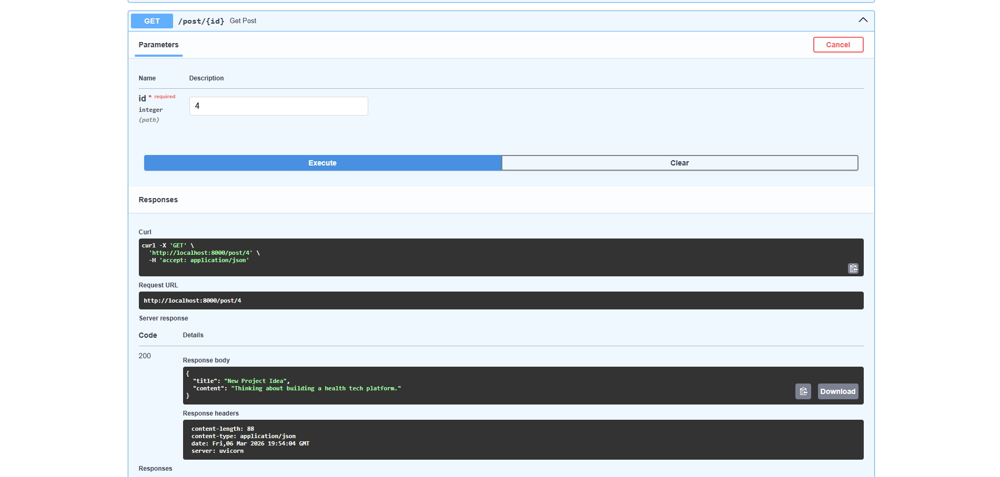
Query Parameters
Query parameters are optional or mandatory variables passed directly into the endpoint function. Assigning a default value (like None) makes them optional.
@application.get("/posts") # registers a GET route
def get_all_posts(limit: int = None): # here parameter is written because FastAPI will Auto Document it and Validate it | declares a helper or endpoint function
if limit: # checks a condition before next step
return list(text_posts.values())[:limit] # returns data to the API caller
return text_posts # returns data to the API caller
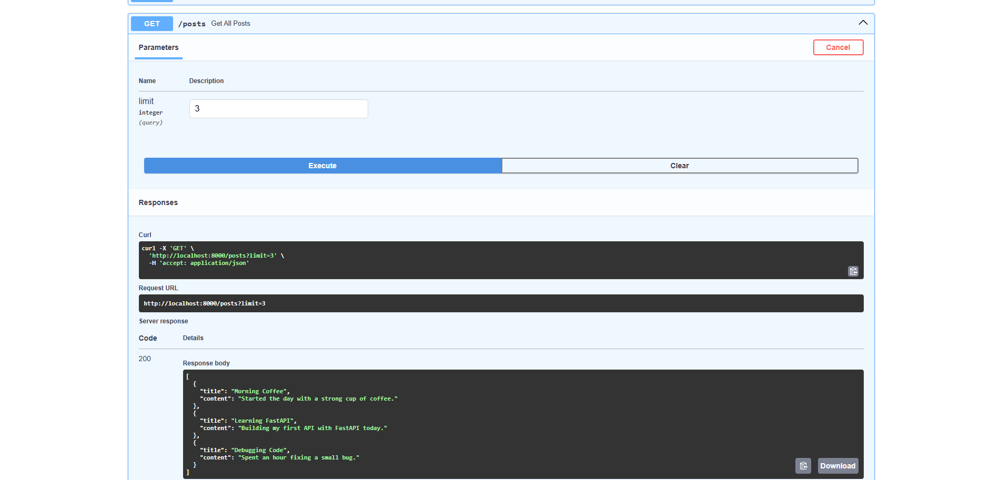
FastAPI automatically validates all data going into and coming out of the function
Pydantic Schemas and Data Validation
Request Bodies
For POST, PUT, or PATCH requests, data is typically sent in the request body. FastAPI uses Pydantic schemas to define and validate this data structure. Create a schemas.py file for these definitions.
# schemas.py # shows this line as part of the example output
from pydantic import BaseModel # imports BaseModel for request validation
class PostCreate(BaseModel): # defines schema for creating posts
title: str # requires post title as text
content: str # requires post content as text
When importing and using this schema in an endpoint, FastAPI strictly validates that incoming request bodies match the schema types before executing the function.
# app.py # shows this line as part of the example output
from app.schemas import PostCreate # imports required names from module
@app.post("/post") # registers a POST route
def create_post(post: PostCreate): # declares a helper or endpoint function
new_id = max(text_posts.keys()) + 1 # assigns value for later use
new_post = {"title": post.title, "content": post.content} # assigns value for later use
text_posts[new_id] = new_post # assigns value for later use
return new_post # returns data to the API caller
Response Models
Specifying a response type using an arrow -> or the response_model parameter improves API documentation (showing exact return formats in /docs) and adds a layer of protection. If the function attempts to return data missing fields defined in the response schema, FastAPI automatically raises an error.
# schemas.py # shows this line as part of the example output
from pydantic import BaseModel # BaseModel is special Func. in Python with Special Features | imports BaseModel for request validation
class PostCreate(BaseModel): # defines schema for creating posts
title: str # requires post title as text
content: str # requires post content as text
class PostResponse(BaseModel): # defines schema for post responses
title: str # requires post title as text
content: str # requires post content as text
# app.py # shows this line as part of the example output
from fastapi import FastAPI, HTTPException # imports FastAPI classes used below
from src.schemas import PostCreate, PostResponse # imports required names from module
application = FastAPI() # creates the FastAPI application instance
@application.get("/hello-world") # registers a GET route
def hello_world(): # defines a simple test endpoint
return {"message":"hello world !!!"} # returns a JSON message response
# text_posts = { # assigns value for later use
# 1 : {"title":"new post", "content": "cool test post"} # shows this line as part of the example output
# } # shows this line as part of the example output
text_posts = { # creates in-memory sample post data
1: {"title": "Morning Coffee", "content": "Started the day with a strong cup of coffee."}, # shows this line as part of the example output
2: {"title": "Learning FastAPI", "content": "Building my first API with FastAPI today."}, # shows this line as part of the example output
3: {"title": "Debugging Code", "content": "Spent an hour fixing a small bug."}, # shows this line as part of the example output
4: {"title": "New Project Idea", "content": "Thinking about building a health tech platform."}, # shows this line as part of the example output
5: {"title": "Database Setup", "content": "Installed PostgreSQL and created a new database."}, # shows this line as part of the example output
6: {"title": "API Testing", "content": "Testing endpoints using Postman."}, # shows this line as part of the example output
7: {"title": "Late Night Coding", "content": "Still coding at midnight."}, # shows this line as part of the example output
8: {"title": "Learning Git", "content": "Practicing commits and branches today."}, # shows this line as part of the example output
9: {"title": "Reading Docs", "content": "Reading FastAPI documentation."}, # shows this line as part of the example output
10: {"title": "Weekend Build", "content": "Working on a small backend project."} # shows this line as part of the example output
} # shows this line as part of the example output
# @application.get("/posts") # shows this line as part of the example output
# def get_all_posts(): # shows this line as part of the example output
# return text_posts # shows this line as part of the example output
@application.get("/post/{id}") # registers a GET route
def get_post(id:int)-> PostResponse: # declares a helper or endpoint function
if id not in text_posts: # checks whether the post exists
raise HTTPException(status_code=404, detail="post not found") # returns an HTTP error for invalid request
return text_posts.get(id) # returns data to the API caller
@application.get("/posts") # registers a GET route
def get_all_posts(limit: int = None): # here parameter is written because FastAPI will Auto Document it and Validate it | declares a helper or endpoint function
if limit: # checks a condition before next step
return list(text_posts.values())[:limit] # returns data to the API caller
return text_posts # returns data to the API caller
@application.post("/post") # registers a POST route
def create_post(post_body: PostCreate) -> PostResponse : # validates incoming (PostCreate) and Outgoing (PostResponse), if not valid so raise error | declares a helper or endpoint function
new_id = max(text_posts.keys()) + 1 # assigns value for later use
new_post = { "title": post_body.title , "content" : post_body.content } # assigns value for later use
text_posts[new_id] = new_post # assigns value for later use
return new_post # returns data to the API caller
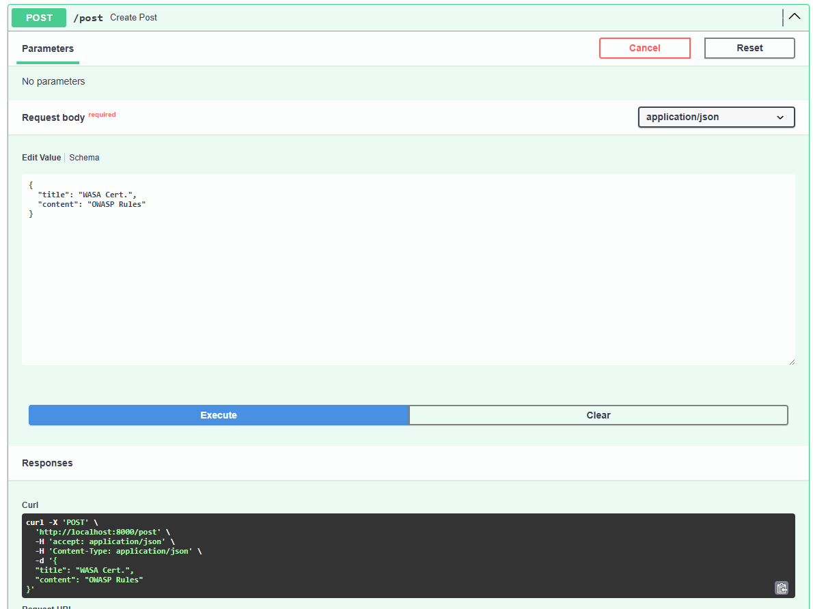
try create post
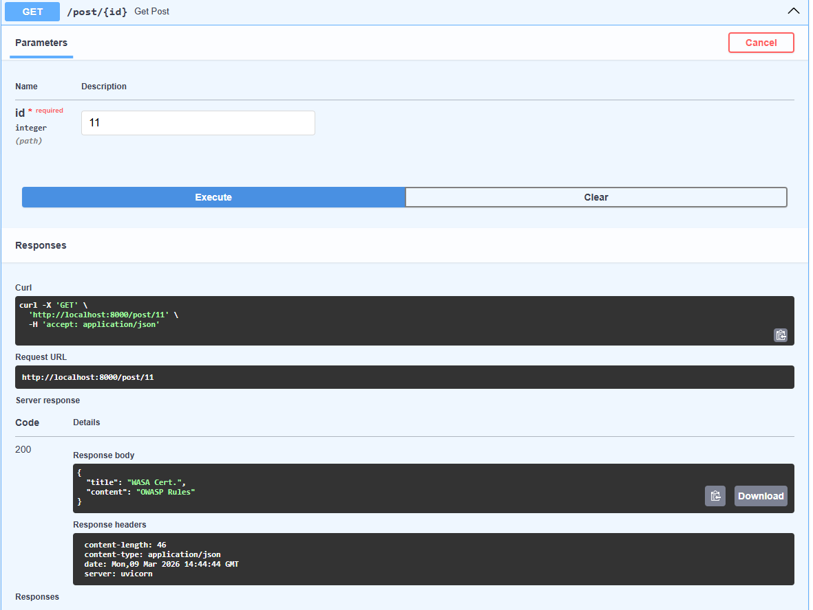
access that post
Database Setup (SQLAlchemy)
To store data persistently (preventing data loss on server refresh), an ORM (Object Relational Mapping) is used. SQLAlchemy allows writing Python-like code to define, retrieve, create, and update data instead of writing manual SQL queries.
Creating Data Models
Create a db.py file to handle database architecture. The Base class must inherit from DeclarativeBase to mark classes as data models.
# db.py # shows this line as part of the example output
import uuid # imports UUID helper for unique IDs
from datetime import datetime # imports datetime for timestamps
from sqlalchemy import Column, String, Text, DateTime, ForeignKey # imports SQLAlchemy column and query tools
from sqlalchemy.dialects.postgresql import UUID # imports PostgreSQL UUID column type
from sqlalchemy.orm import DeclarativeBase, relationship # imports ORM base and relationships
class Base(DeclarativeBase): # declares a class used by the app
pass # shows this line as part of the example output
# we can't directly use declarative_base() because we need to use it in async way, so we create a class that inherits from DeclarativeBase and then we can use it to create our models
class Post(Base): # declares a class used by the app
__tablename__ = "post" # assigns value for later use
# Primary Key must be unique. Automatically generates a unique UUID4. | shows this line as part of the example output
id = Column(UUID(as_uuid=True), primary_key=True, default=uuid.uuid4) # assigns value for later use
caption = Column(Text) # assigns value for later use
url = Column(String, nullable=False) # assigns value for later use
file_type = Column(String, nullable=False) # assigns value for later use
file_name = Column(String, nullable=False) # assigns value for later use
created_at = Column(DateTime, default=datetime.utcnow) # assigns value for later use
Async Engine and Session Initialization
Configure the connection to an asynchronous SQLite database locally for testing.
# db.py # shows this line as part of the example output
from sqlalchemy.ext.asyncio import create_async_engine, async_sessionmaker, AsyncSession # imports async database session utilities
from collections.abc import AsyncGenerator # imports async generator typing
DATABASE_URL = "sqlite+aiosqlite:///./test.db" # sets async SQLite database location
engine = create_async_engine(DATABASE_URL) # creates async SQLAlchemy engine
async_session_maker = async_sessionmaker(engine, expire_on_commit=False) # builds async DB session factory
# Creates tables in the database automatically finding classes inheriting from Base # shows this line as part of the example output
async def create_db_and_tables(): # creates database tables at startup
async with engine.begin() as conn: # shows this line as part of the example output
await conn.run_sync(Base.metadata.create_all) # waits for async operation to finish
# Asynchronous generator to yield a database session # shows this line as part of the example output
async def get_async_session() -> AsyncGenerator[AsyncSession, None]: # provides one DB session per request
async with async_session_maker() as session: # shows this line as part of the example output
yield session # shows this line as part of the example output
Lifespan Context Manager
In app.py, link the table creation to the FastAPI startup process using a lifespan asynchronous context manager. This guarantees the database is ready when the server boots.
# app.py # shows this line as part of the example output
from contextlib import asynccontextmanager # imports required names from module
from app.db import create_db_and_tables # imports required names from module
@asynccontextmanager # applies decorator behavior to next function
async def lifespan(app: FastAPI): # declares an async endpoint/helper
await create_db_and_tables() # waits for async operation to finish
yield # shows this line as part of the example output
app = FastAPI(lifespan=lifespan) # creates the FastAPI application instance
if
test.dbis generated, our db unfinished script is working
# db.py
from collections.abc import AsyncGenerator
from datetime import datetime
import uuid
from sqlalchemy import Column, String, Text, DateTime, ForeignKey
from sqlalchemy.dialects.postgresql import UUID
from sqlalchemy.ext.asyncio import AsyncSession, create_async_engine, async_sessionmaker
from sqlalchemy.orm import DeclarativeBase, relationship
DATABASE_URL = "sqlite+aiosqlite:///./test.db"
class Base(DeclarativeBase): # we can't directly use declarative_base() because we need to use it in async way, so we create a class that inherits from DeclarativeBase and then we can use it to create our models
pass
class Post(Base):
__tablename__ = "posts"
id = Column(UUID(as_uuid=True),primary_key=True, default=uuid.uuid4)
caption = Column(Text)
url = Column(String, nullable=False)
file_type = Column(String, nullable= False)
file_name = Column(String, nullable=False)
created_at = Column(DateTime, default=datetime.utcnow)
engine = create_async_engine(DATABASE_URL)
async_session_maker = async_sessionmaker(engine, expire_on_commit=False)
async def create_db_and_tables():
async with engine.begin() as conn:
await conn.run_sync(Base.metadata.create_all)
async def get_async_session() -> AsyncGenerator[AsyncSession, None]:
async with async_session_maker() as session:
yield session
# app.py
from fastapi import FastAPI, HTTPException
from src.schemas import PostCreate, PostResponse
from src.db import Post, create_db_and_tables, get_async_session
from sqlalchemy.ext.asyncio import AsyncSession
from contextlib import asynccontextmanager
@asynccontextmanager
async def lifespan(app: FastAPI):
await create_db_and_tables()
yield
application = FastAPI(lifespan=lifespan)
@application.get("/hello-world")
def hello_world():
return {"message":"hello world !!!"}
# text_posts = {
# 1 : {"title":"new post", "content": "cool test post"}
# }
text_posts = {
1: {"title": "Morning Coffee", "content": "Started the day with a strong cup of coffee."},
2: {"title": "Learning FastAPI", "content": "Building my first API with FastAPI today."},
3: {"title": "Debugging Code", "content": "Spent an hour fixing a small bug."},
4: {"title": "New Project Idea", "content": "Thinking about building a health tech platform."},
5: {"title": "Database Setup", "content": "Installed PostgreSQL and created a new database."},
6: {"title": "API Testing", "content": "Testing endpoints using Postman."},
7: {"title": "Late Night Coding", "content": "Still coding at midnight."},
8: {"title": "Learning Git", "content": "Practicing commits and branches today."},
9: {"title": "Reading Docs", "content": "Reading FastAPI documentation."},
10: {"title": "Weekend Build", "content": "Working on a small backend project."}
}
# @application.get("/posts")
# def get_all_posts():
# return text_posts
@application.get("/post/{id}")
def get_post(id:int)-> PostResponse:
if id not in text_posts:
raise HTTPException(status_code=404, detail="post not found")
return text_posts.get(id)
@application.get("/posts")
def get_all_posts(limit: int = None): # here parameter is written because FastAPI will Auto Document it and Validate it
if limit:
return list(text_posts.values())[:limit]
return text_posts
@application.post("/post")
def create_post(post_body: PostCreate) -> PostResponse : # validates incoming (PostCreate) and Outgoing (PostResponse), if not valid so raise error
new_id = max(text_posts.keys()) + 1
new_post = { "title": post_body.title , "content" : post_body.content }
text_posts[new_id] = new_post
return new_post
Handling Image and Video Uploads & CRUD Operations (Create, Read, Delete)
Handling Image and Video Uploads
comment old stuff, for a rewamp
# old stuff rewamp
# @application.get("/hello-world")
# def hello_world():
# return {"message":"hello world !!!"}
# # text_posts = {
# # 1 : {"title":"new post", "content": "cool test post"}
# # }
# text_posts = {
# 1: {"title": "Morning Coffee", "content": "Started the day with a strong cup of coffee."},
# 2: {"title": "Learning FastAPI", "content": "Building my first API with FastAPI today."},
# 3: {"title": "Debugging Code", "content": "Spent an hour fixing a small bug."},
# 4: {"title": "New Project Idea", "content": "Thinking about building a health tech platform."},
# 5: {"title": "Database Setup", "content": "Installed PostgreSQL and created a new database."},
# 6: {"title": "API Testing", "content": "Testing endpoints using Postman."},
# 7: {"title": "Late Night Coding", "content": "Still coding at midnight."},
# 8: {"title": "Learning Git", "content": "Practicing commits and branches today."},
# 9: {"title": "Reading Docs", "content": "Reading FastAPI documentation."},
# 10: {"title": "Weekend Build", "content": "Working on a small backend project."}
# }
# # @application.get("/posts")
# # def get_all_posts():
# # return text_posts
# @application.get("/post/{id}")
# def get_post(id:int)-> PostResponse:
# if id not in text_posts:
# raise HTTPException(status_code=404, detail="post not found")
# return text_posts.get(id)
# @application.get("/posts")
# def get_all_posts(limit: int = None): # here parameter is written because FastAPI will Auto Document it and Validate it
# if limit:
# return list(text_posts.values())[:limit]
# return text_posts
# @application.post("/post")
# def create_post(post_body: PostCreate) -> PostResponse : # validates incoming (PostCreate) and Outgoing (PostResponse), if not valid so raise error
# new_id = max(text_posts.keys()) + 1
# new_post = { "title": post_body.title , "content" : post_body.content }
# text_posts[new_id] = new_post
# return new_post
Integrating ImageKit
Create an images.py file to handle environment variables and ImageKit initialization. Variables are loaded exclusively on the back-end to prevent front-end security token exposure.
# images.py # shows this line as part of the example output
import os # imports required module
from dotenv import load_dotenv # loads environment values from .env
from imagekitio import ImageKit # imports ImageKit client
load_dotenv() # loads environment variables into runtime
imagekit = ImageKit( # initializes ImageKit API client
private_key=os.getenv("IMAGEKIT_PRIVATE_KEY"), # reads private key from environment
public_key=os.getenv("IMAGEKIT_PUBLIC_KEY"), # reads public key from environment
url_endpoint=os.getenv("IMAGEKIT_URL_ENDPOINT") # reads URL endpoint from environment
) # shows this line as part of the example output
File Upload Endpoint
Uploads require multipart/form-data instead of standard JSON request bodies. FastAPI's UploadFile receives the file object.
Because server-side uploading (Backend Upload) is more secure, the API receives the file, duplicates it to a temporary file, uploads it to ImageKit, and then deletes the local temporary file.
# app.py # shows this line as part of the example output
import tempfile # imports required module
import shutil # imports required module
import os # imports required module
from fastapi import File, UploadFile, Form, Depends, HTTPException # imports FastAPI classes used below
from sqlalchemy.ext.asyncio import AsyncSession # imports async database session utilities
from imagekitio.models.UploadFileRequestOptions import UploadFileRequestOptions # imports required names from module
from app.db import Post, get_async_session # imports required names from module
from app.images import imagekit # imports required names from module
@app.post("/upload") # registers a POST route
async def upload_file( # declares an async endpoint/helper
file: UploadFile = File(...), # assigns value for later use
caption: str = Form(...), # assigns value for later use
session: AsyncSession = Depends(get_async_session) # assigns value for later use
): # shows this line as part of the example output
temp_file_path = None # assigns value for later use
try: # starts protected block for upload flow
# Create temporary file matching the extension of the uploaded file | shows this line as part of the example output
_, ext = os.path.splitext(file.filename) # assigns value for later use
with tempfile.NamedTemporaryFile(delete=False, suffix=ext) as temp_file: # creates temporary file for upload
temp_file_path = temp_file.name # assigns value for later use
shutil.copyfileobj(file.file, temp_file) # shows this line as part of the example output
# Upload the temporary file to ImageKit | shows this line as part of the example output
with open(temp_file_path, "rb") as f: # reopens temp file in binary mode
options = UploadFileRequestOptions(use_unique_file_name=True, tags=["backend_upload"]) # assigns value for later use
upload_result = imagekit.upload_file( # assigns value for later use
file=f, # assigns value for later use
file_name=file.filename, # assigns value for later use
options=options # assigns value for later use
) # shows this line as part of the example output
if upload_result.response_metadata.http_status_code == 200: # checks a condition before next step
file_type = "video" if file.content_type.startswith("video/") else "image" # assigns value for later use
# Database storage operations | shows this line as part of the example output
post = Post( # assigns value for later use
caption=caption, # assigns value for later use
url=upload_result.url, # assigns value for later use
file_type=file_type, # assigns value for later use
file_name=upload_result.name # assigns value for later use
) # shows this line as part of the example output
session.add(post) # shows this line as part of the example output
await session.commit() # waits for async operation to finish
await session.refresh(post) # Hydrates object with auto-generated ID & created_at | waits for async operation to finish
return post # returns data to the API caller
except Exception as e: # handles unexpected runtime errors
raise HTTPException(status_code=500, detail=str(e)) # returns an HTTP error for invalid request
finally: # ensures cleanup always executes
# Clean up file structures to avoid memory leaks | shows this line as part of the example output
if temp_file_path and os.path.exists(temp_file_path): # checks a condition before next step
os.unlink(temp_file_path) # shows this line as part of the example output
file.file.close() # shows this line as part of the example output
Note: Depends(get_async_session) is an example of Dependency Injection. It runs the provided function and passes the return value dynamically as a variable into the endpoint.
CRUD Operations (Create, Read, Delete)
Retrieving Data (Read)
Use SQLAlchemy's select to query the database. To extract results dynamically, loop over the rows or use .scalars().all().
from sqlalchemy import select # imports SQLAlchemy column and query tools
@app.get("/feed") # registers a GET route
async def get_feed(session: AsyncSession = Depends(get_async_session)): # declares an async endpoint/helper
result = await session.execute(select(Post).order_by(Post.created_at.desc())) # assigns value for later use
posts = [row for row in result.all()] # assigns value for later use
post_data = [] # assigns value for later use
for post in posts: # shows this line as part of the example output
post_data.append({ # shows this line as part of the example output
"id": str(post.id), # shows this line as part of the example output
"caption": post.caption, # shows this line as part of the example output
"url": post.url, # shows this line as part of the example output
"file_type": post.file_type, # shows this line as part of the example output
"file_name": post.file_name, # shows this line as part of the example output
"created_at": post.created_at.isoformat() # shows this line as part of the example output
}) # shows this line as part of the example output
return post_data # returns data to the API caller
Deleting Data
Requires verifying exact matches (converting strings to UUIDs where necessary).
import uuid # imports UUID helper for unique IDs
@app.delete("/post/{post_id}") # registers a DELETE route
async def delete_post(post_id: str, session: AsyncSession = Depends(get_async_session)): # declares an async endpoint/helper
try: # starts protected block for upload flow
post_uuid = uuid.UUID(post_id) # assigns value for later use
result = await session.execute(select(Post).where(Post.id == post_uuid)) # assigns value for later use
post = result.scalars().first() # assigns value for later use
if not post: # checks a condition before next step
raise HTTPException(status_code=404, detail="post not found") # returns an HTTP error for invalid request
await session.delete(post) # waits for async operation to finish
await session.commit() # waits for async operation to finish
return {"success": True, "message": "post deleted successfully"} # returns data to the API caller
except Exception as e: # handles unexpected runtime errors
raise HTTPException(status_code=500, detail=str(e)) # returns an HTTP error for invalid request
Code(s)
next part
# db.py
from collections.abc import AsyncGenerator
from datetime import datetime
import uuid
from sqlalchemy import Column, String, Text, DateTime, ForeignKey
from sqlalchemy.dialects.postgresql import UUID
from sqlalchemy.ext.asyncio import AsyncSession, create_async_engine, async_sessionmaker
from sqlalchemy.orm import DeclarativeBase, relationship
DATABASE_URL = "sqlite+aiosqlite:///./test.db"
class Base(DeclarativeBase): # we can't directly use declarative_base() because we need to use it in async way, so we create a class that inherits from DeclarativeBase and then we can use it to create our models
pass
class Post(Base):
__tablename__ = "posts"
id = Column(UUID(as_uuid=True),primary_key=True, default=uuid.uuid4)
caption = Column(Text)
url = Column(String, nullable=False)
file_type = Column(String, nullable= False)
file_name = Column(String, nullable=False)
created_at = Column(DateTime, default=datetime.utcnow)
engine = create_async_engine(DATABASE_URL)
async_session_maker = async_sessionmaker(engine, expire_on_commit=False)
async def create_db_and_tables():
async with engine.begin() as conn:
await conn.run_sync(Base.metadata.create_all)
async def get_async_session() -> AsyncGenerator[AsyncSession, None]:
async with async_session_maker() as session:
yield session
# app.py
from fastapi import FastAPI, HTTPException, File, UploadFile, Depends, Form
from src.schemas import PostCreate, PostResponse
from src.db import Post, create_db_and_tables, get_async_session
from sqlalchemy.ext.asyncio import AsyncSession
from sqlalchemy import select
from contextlib import asynccontextmanager
@asynccontextmanager
async def lifespan(app: FastAPI):
await create_db_and_tables() # create db for us, and make sure this is essentially handled correctly and cleanly . at time of exit, it will close the connection to the database, so that we don't have any connection leaks, and we can ensure that our application is properly cleaned up when it shuts down.
yield
application = FastAPI(lifespan=lifespan)
@application.post("/upload") # using async, fastapi is async framework
async def upload_file(
file: UploadFile = File(...),
caption: str = Form(""),
session: AsyncSession = Depends(get_async_session) # FastAPI Dependency Injection, it will automatically create a new session for each request and close it after the request is done
):
post = Post( # dummy post
caption = caption,
url = "dummy url",
file_type = "photo",
file_name = "dummy name"
)
session.add(post) # like staging, post is added to session but not saved
await session.commit() # like commit, saving the post to the database
# id and created_at are generated by the database, so we need to refresh the post object to get the updated data from the database, because after commit, the post object is not updated with the data from the database, so we need to refresh it to get the id of the post
# after commit, the post object is not updated with the data from the database, so we need to refresh it to get the id of the post
await session.refresh(post) # like refresh, refreshing the post object with the data from the database, so that we can get the id of the post
return post
@application.get("/feed")
async def get_feed(
session: AsyncSession = Depends(get_async_session)
):
result = await session.execute(select(Post).order_by(Post.created_at.desc())) # like select * from posts order by created_at desc, it will return a list of Post objects
posts = [row[0] for row in result.all()] # result.all() will return a list of tuples, where each tuple contains a single Post object, so we need to extract the Post object from the tuple using row[0]
# cursor object is returned by the database, and we need to convert it to a list of Post objects, so that we can return it as a response
posts_data = []
for post in posts:
posts_data.append({
"id":str(post.id),
"caption":post.caption,
"url":post.url,
"file_type":post.file_type,
"file_name":post.file_name,
"created_at":post.created_at.isoformat()
})
return {"posts": posts_data}
# old stuff rewamp
# @application.get("/hello-world")
# def hello_world():
# return {"message":"hello world !!!"}
# # text_posts = {
# # 1 : {"title":"new post", "content": "cool test post"}
# # }
# text_posts = {
# 1: {"title": "Morning Coffee", "content": "Started the day with a strong cup of coffee."},
# 2: {"title": "Learning FastAPI", "content": "Building my first API with FastAPI today."},
# 3: {"title": "Debugging Code", "content": "Spent an hour fixing a small bug."},
# 4: {"title": "New Project Idea", "content": "Thinking about building a health tech platform."},
# 5: {"title": "Database Setup", "content": "Installed PostgreSQL and created a new database."},
# 6: {"title": "API Testing", "content": "Testing endpoints using Postman."},
# 7: {"title": "Late Night Coding", "content": "Still coding at midnight."},
# 8: {"title": "Learning Git", "content": "Practicing commits and branches today."},
# 9: {"title": "Reading Docs", "content": "Reading FastAPI documentation."},
# 10: {"title": "Weekend Build", "content": "Working on a small backend project."}
# }
# # @application.get("/posts")
# # def get_all_posts():
# # return text_posts
# @application.get("/post/{id}")
# def get_post(id:int)-> PostResponse:
# if id not in text_posts:
# raise HTTPException(status_code=404, detail="post not found")
# return text_posts.get(id)
# @application.get("/posts")
# def get_all_posts(limit: int = None): # here parameter is written because FastAPI will Auto Document it and Validate it
# if limit:
# return list(text_posts.values())[:limit]
# return text_posts
# @application.post("/post")
# def create_post(post_body: PostCreate) -> PostResponse : # validates incoming (PostCreate) and Outgoing (PostResponse), if not valid so raise error
# new_id = max(text_posts.keys()) + 1
# new_post = { "title": post_body.title , "content" : post_body.content }
# text_posts[new_id] = new_post
# return new_post
uploading sample document
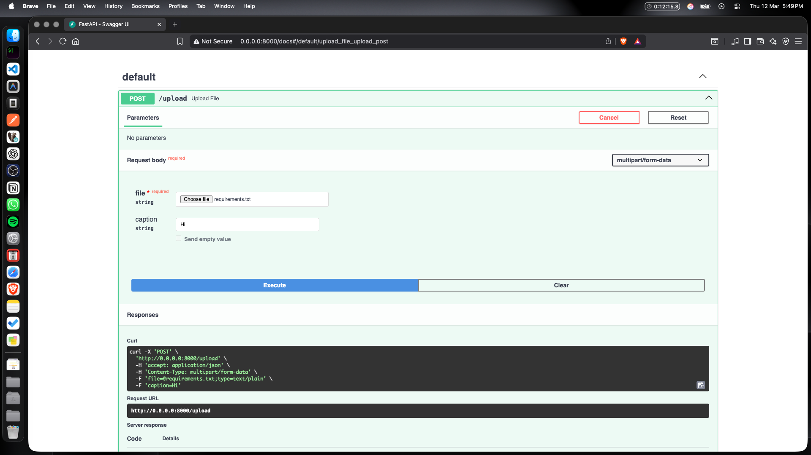
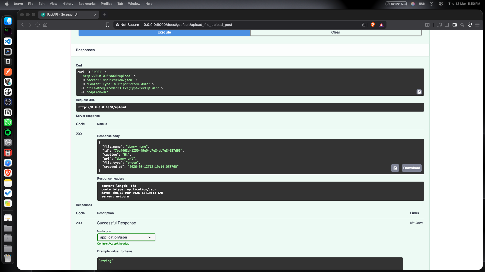
even if we exit application, db get saved, once we restart application, db gets restored !!!
after reopning the application, db restored, and get api worked !!!
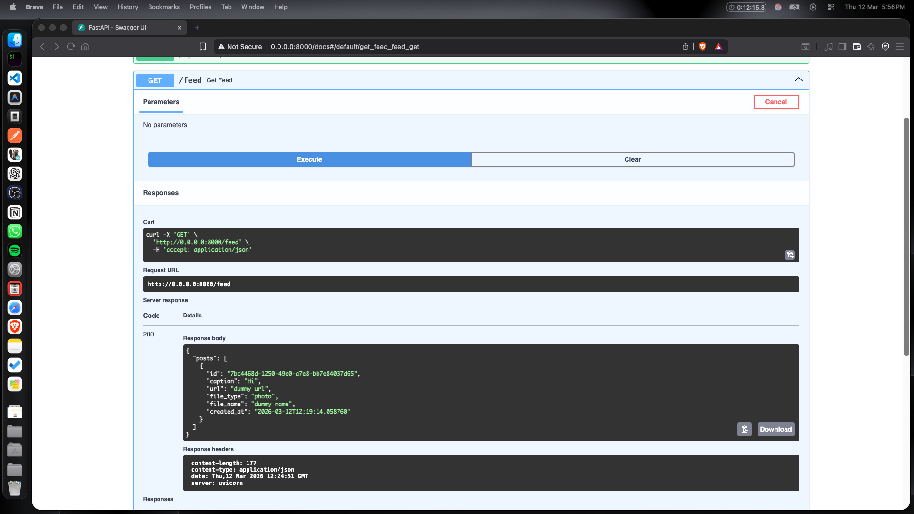
next part
You can use External Storage
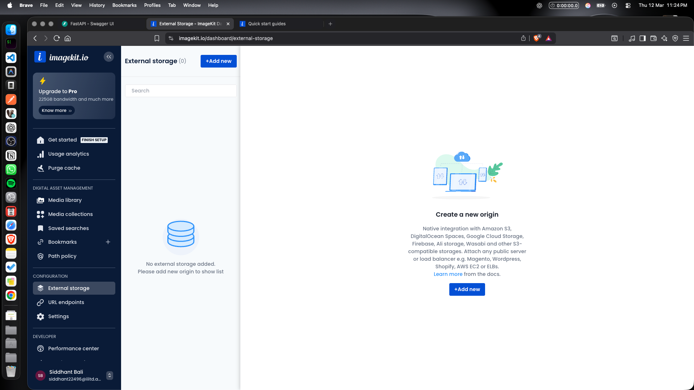
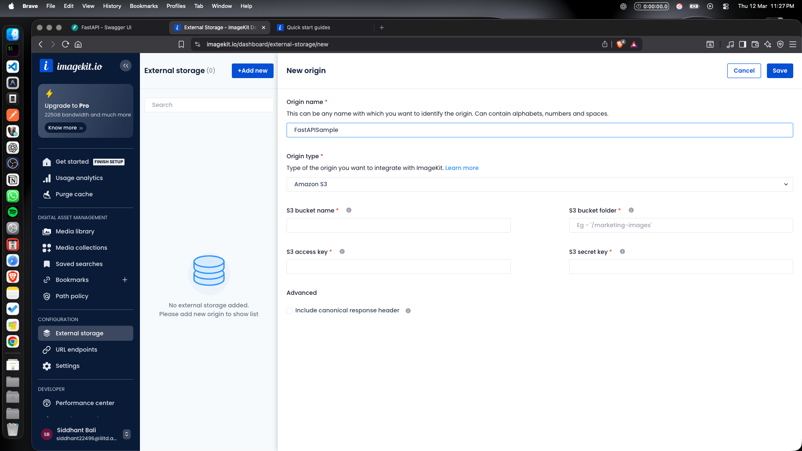
But Rn, using Imagekit's DAM
- Use this doc: https://imagekit.io/docs/integration/python
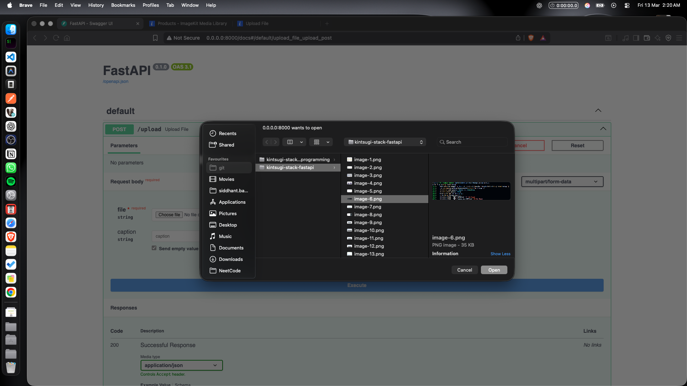
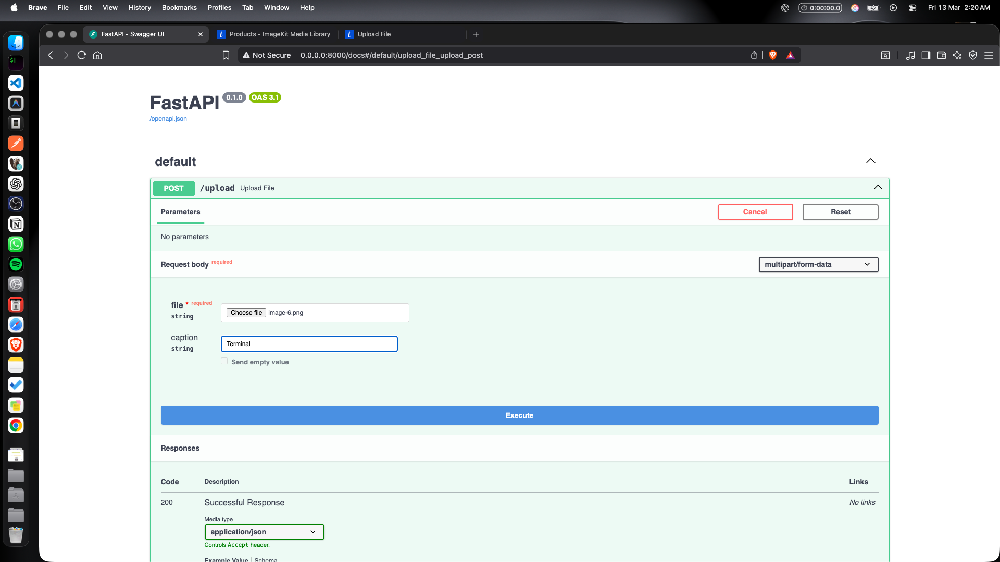
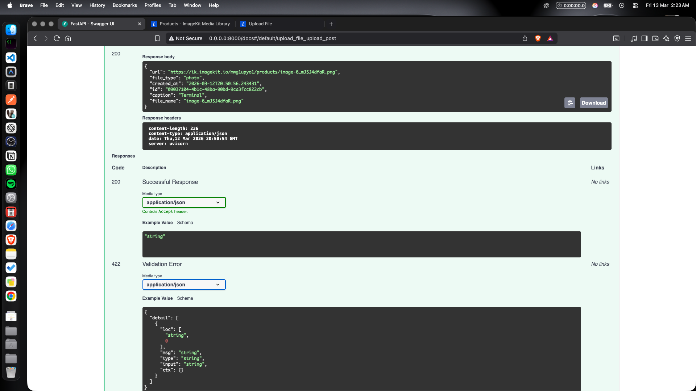
schema not error
Now Post Stored in DB and Image linked stored in DAM
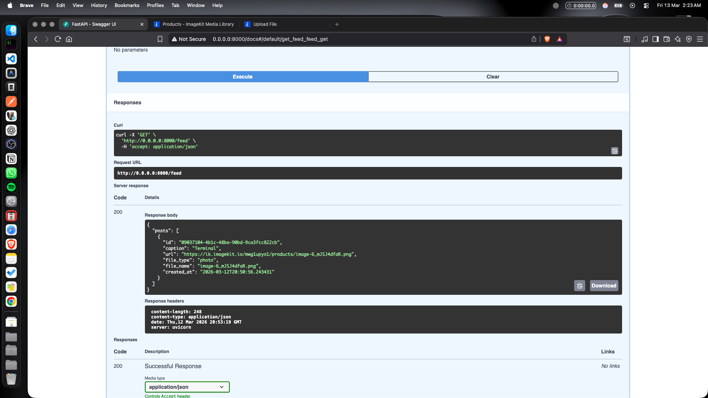
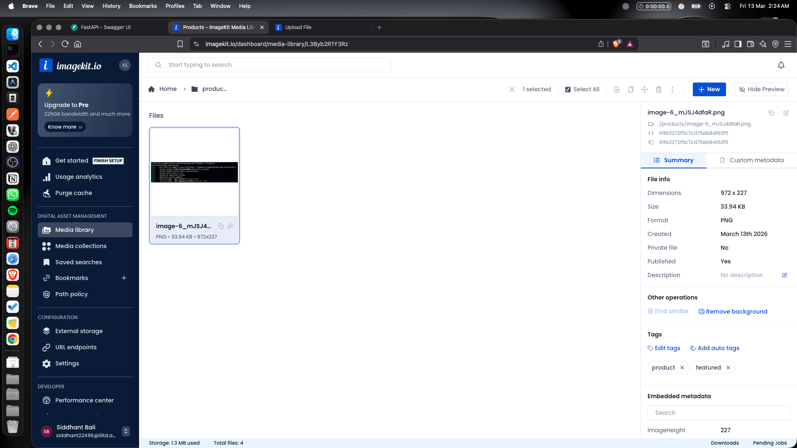
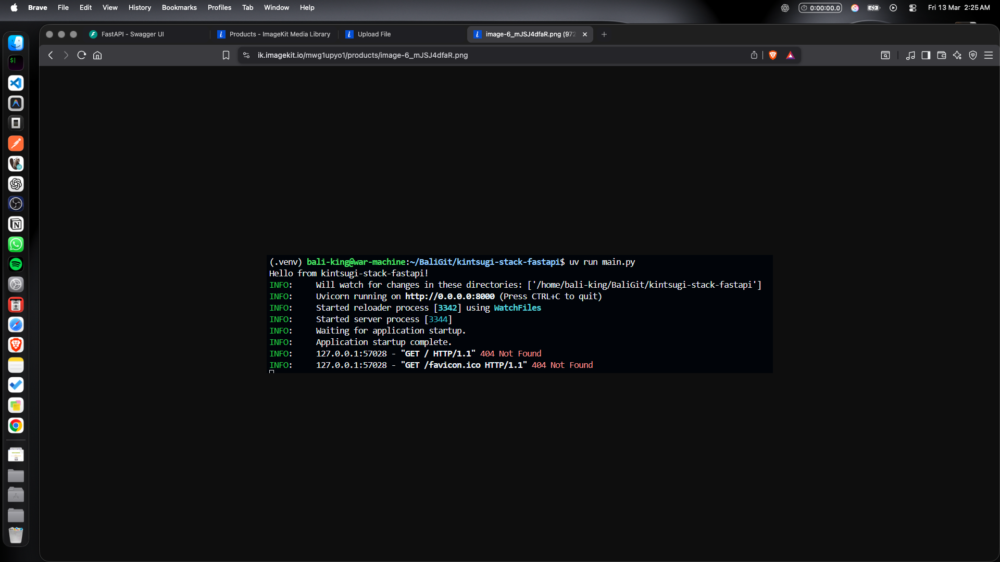
# images.py
from dotenv import load_dotenv
from imagekitio import ImageKit
import os
load_dotenv()
imagekit = ImageKit(
private_key=os.getenv("IMAGEKIT_PRIVATE_KEY"),
# public_key=os.getenv("IMAGEKIT_PUBLIC_KEY"), # old
# url_endpoint=os.getenv("IMAGEKIT_URL_ENDPOINT") # old
)
# Store URL endpoint for reuse
URL_ENDPOINT = os.environ.get("IMAGEKIT_URL_ENDPOINT")
# uv pip install imagekitio==5.2.0
# imagekit is a client library for ImageKit, which is a cloud-based image and video management service. It provides a simple and easy-to-use interface for uploading, transforming, and delivering images and videos.
# app.py
from fastapi import FastAPI, HTTPException, File, UploadFile, Depends, Form
from src.schemas import PostCreate, PostResponse
from src.db import Post, create_db_and_tables, get_async_session
from sqlalchemy.ext.asyncio import AsyncSession
from sqlalchemy import select
from contextlib import asynccontextmanager
from src.images import imagekit
# from imagekitio.models.UploadFileRequestOptions import UploadFileRequestOptions
import shutil
import os
import uuid
import tempfile
@asynccontextmanager
async def lifespan(app: FastAPI):
await create_db_and_tables() # create db for us, and make sure this is essentially handled correctly and cleanly . at time of exit, it will close the connection to the database, so that we don't have any connection leaks, and we can ensure that our application is properly cleaned up when it shuts down.
yield
application = FastAPI(lifespan=lifespan)
@application.post("/upload") # using async, fastapi is async framework
async def upload_file(
file: UploadFile = File(...),
caption: str = Form(""),
session: AsyncSession = Depends(get_async_session) # FastAPI Dependency Injection, it will automatically create a new session for each request and close it after the request is done
):
temp_file_path = None
try:
with tempfile.NamedTemporaryFile(delete=False, suffix=os.path.splitext(file.filename)[1]) as temp_file:
temp_file_path = temp_file.name
shutil.copyfileobj(file.file, temp_file)
upload_result = imagekit.files.upload(
# upload_result = imagekit.upload_file( # old
file=open(temp_file_path, "rb"),
file_name=file.filename,
folder="/products",
tags=["product", "featured"]
# options=UploadFileRequestOptions( # old
# use_unique_file_name=True,
# tags=["backend-upload"]
# )
)
if upload_result and upload_result.url :
# if upload_result.status_code == 200: # old
post = Post(
# dummy post
caption = caption,
# url = "dummy url",
url = upload_result.url,
# file_type = "photo",
file_type = "video" if file.content_type.startswith("video/") else "photo",
# file_name = "dummy name"
file_name = upload_result.name
)
session.add(post)
await session.commit()
await session.refresh(post)
return post
except Exception as e:
raise HTTPException(status_code=500, detail=str(e))
# pass
finally:
if temp_file_path and os.path.exists(temp_file_path):
os.unlink(temp_file_path)
file.file.close()
# dummy
# post = Post( # dummy post
# caption = caption,
# url = "dummy url",
# file_type = "photo",
# file_name = "dummy name"
# )
# session.add(post) # like staging, post is added to session but not saved
# await session.commit() # like commit, saving the post to the database
# # id and created_at are generated by the database, so we need to refresh the post object to get the updated data from the database, because after commit, the post object is not updated with the data from the database, so we need to refresh it to get the id of the post
# # after commit, the post object is not updated with the data from the database, so we need to refresh it to get the id of the post
# await session.refresh(post) # like refresh, refreshing the post object with the data from the database, so that we can get the id of the post
# return post
@application.get("/feed")
async def get_feed(
session: AsyncSession = Depends(get_async_session)
):
result = await session.execute(select(Post).order_by(Post.created_at.desc())) # like select * from posts order by created_at desc, it will return a list of Post objects
posts = [row[0] for row in result.all()] # result.all() will return a list of tuples, where each tuple contains a single Post object, so we need to extract the Post object from the tuple using row[0]
# cursor object is returned by the database, and we need to convert it to a list of Post objects, so that we can return it as a response
posts_data = []
for post in posts:
posts_data.append({
"id":str(post.id),
"caption":post.caption,
"url":post.url,
"file_type":post.file_type,
"file_name":post.file_name,
"created_at":post.created_at.isoformat()
})
return {"posts": posts_data}
# old stuff rewamp
# @application.get("/hello-world")
# def hello_world():
# return {"message":"hello world !!!"}
# # text_posts = {
# # 1 : {"title":"new post", "content": "cool test post"}
# # }
# text_posts = {
# 1: {"title": "Morning Coffee", "content": "Started the day with a strong cup of coffee."},
# 2: {"title": "Learning FastAPI", "content": "Building my first API with FastAPI today."},
# 3: {"title": "Debugging Code", "content": "Spent an hour fixing a small bug."},
# 4: {"title": "New Project Idea", "content": "Thinking about building a health tech platform."},
# 5: {"title": "Database Setup", "content": "Installed PostgreSQL and created a new database."},
# 6: {"title": "API Testing", "content": "Testing endpoints using Postman."},
# 7: {"title": "Late Night Coding", "content": "Still coding at midnight."},
# 8: {"title": "Learning Git", "content": "Practicing commits and branches today."},
# 9: {"title": "Reading Docs", "content": "Reading FastAPI documentation."},
# 10: {"title": "Weekend Build", "content": "Working on a small backend project."}
# }
# # @application.get("/posts")
# # def get_all_posts():
# # return text_posts
# @application.get("/post/{id}")
# def get_post(id:int)-> PostResponse:
# if id not in text_posts:
# raise HTTPException(status_code=404, detail="post not found")
# return text_posts.get(id)
# @application.get("/posts")
# def get_all_posts(limit: int = None): # here parameter is written because FastAPI will Auto Document it and Validate it
# if limit:
# return list(text_posts.values())[:limit]
# return text_posts
# @application.post("/post")
# def create_post(post_body: PostCreate) -> PostResponse : # validates incoming (PostCreate) and Outgoing (PostResponse), if not valid so raise error
# new_id = max(text_posts.keys()) + 1
# new_post = { "title": post_body.title , "content" : post_body.content }
# text_posts[new_id] = new_post
# return new_post
next part
Just Delete API
@application.delete("/post/{post_id}")
async def delete_post(
post_id: str,
session: AsyncSession = Depends(get_async_session)
):
try:
post_uuid = uuid.UUID(post_id) # convert the post_id string to a UUID object, if the post_id is not a valid UUID, it will raise a ValueError, so we need to handle that exception and return a 400 Bad Request error to the client, because the client has sent an invalid post_id, so we need to inform them about the error in their request
result = await session.execute(select(Post).where(Post.id == post_uuid)) # like select * from posts where id = post_id, it will return a list of Post objects that match the condition, but since id is unique, it will return either one Post object or None
post = result.scalars().first() # scalars() will return a list of Post objects, and first() will return the first Post object from the list, or None if the list is empty
if not post:
raise HTTPException(status_code=404, detail="Post not found")
await session.delete(post) # like delete from posts where id = post_id, it will delete the post from the database, but we need to commit the transaction to make sure that the changes are saved to the database, so we need to call session.commit() after deleting the post
await session.commit()
return {"success":True, "message":"Post deleted successfully"}
except Exception as e:
raise HTTPException(status_code=500, detail=str(e))
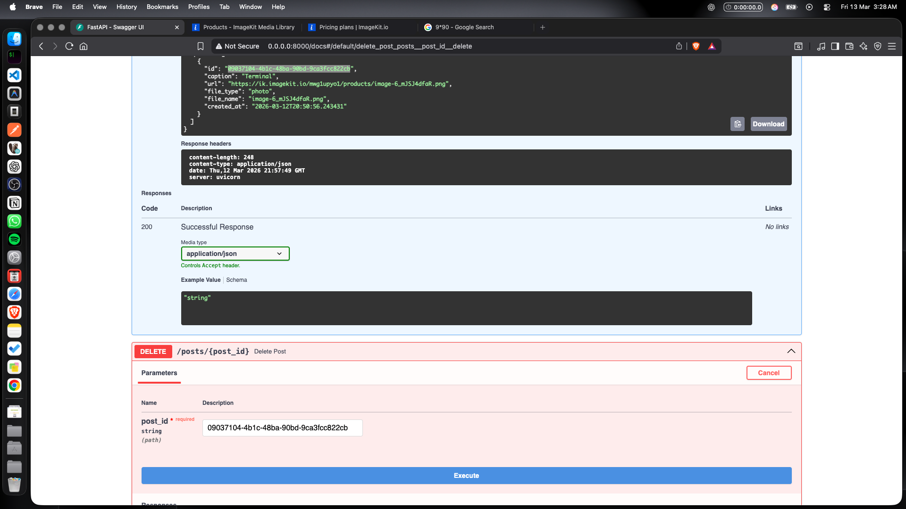
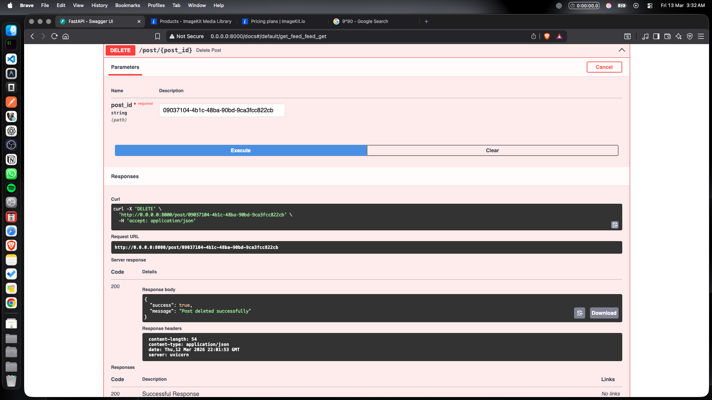
Deleted Success
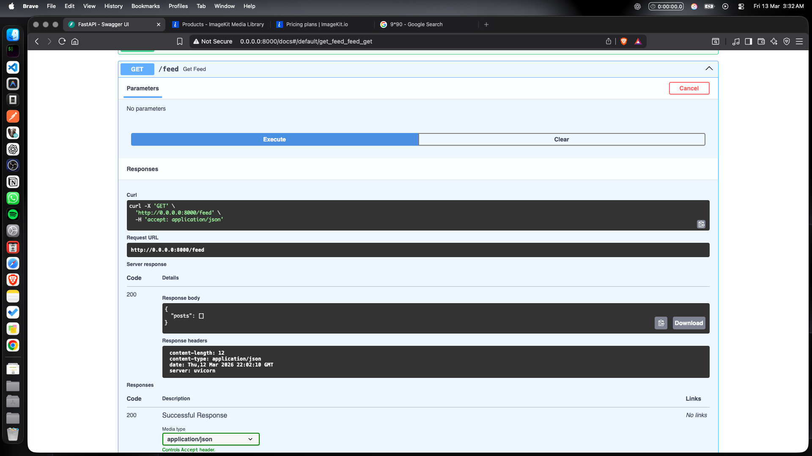
Not won't shown in GET
User Authentication (FastAPI Users)
To secure the application with JWT, the fastapi-users library automates standard processes (registration, login, verifying tokens).
Database Relationships
A one-to-many relationship links one user to many posts. The "child" (Post) holds the ForeignKey linking it to the parent (User).
# db.py # shows this line as part of the example output
from fastapi_users.db import SQLAlchemyBaseUserTableUUID, SQLAlchemyUserDatabase # imports required names from module
class User(SQLAlchemyBaseUserTableUUID, Base): # declares a class used by the app
posts = relationship("Post", back_populates="user") # assigns value for later use
# Update the Post class # shows this line as part of the example output
class Post(Base): # declares a class used by the app
# ... existing fields ... | shows this line as part of the example output
user_id = Column(UUID(as_uuid=True), ForeignKey("user.id"), nullable=False) # assigns value for later use
user = relationship("User", back_populates="posts") # assigns value for later use
async def get_user_db(session: AsyncSession = Depends(get_async_session)): # declares an async endpoint/helper
yield SQLAlchemyUserDatabase(session, User) # shows this line as part of the example output
JWT Strategy and User Manager
Create a users.py file to handle authentication backend configuration. Note that SECRET should be a complex, unshared string used to encode tokens.
# users.py # shows this line as part of the example output
import uuid # imports UUID helper for unique IDs
from typing import Optional # imports required names from module
from fastapi import Depends, Request # imports FastAPI classes used below
from fastapi_users import BaseUserManager, FastAPIUsers, UUIDIDMixin # imports required names from module
from fastapi_users.authentication import AuthenticationBackend, BearerTransport, JWTStrategy # imports required names from module
from app.db import User, get_user_db # imports required names from module
SECRET = "super_secret_string" # assigns value for later use
class UserManager(UUIDIDMixin, BaseUserManager[User, uuid.UUID]): # declares a class used by the app
reset_password_token_secret = SECRET # assigns value for later use
verification_token_secret = SECRET # assigns value for later use
# Custom hooks are supported (e.g., on_after_register) | shows this line as part of the example output
async def get_user_manager(user_db=Depends(get_user_db)): # declares an async endpoint/helper
yield UserManager(user_db) # shows this line as part of the example output
bearer_transport = BearerTransport(tokenUrl="auth/jwt/login") # assigns value for later use
def get_jwt_strategy() -> JWTStrategy: # declares a helper or endpoint function
# Set lifespan to 3600 seconds (1 hour) | shows this line as part of the example output
return JWTStrategy(secret=SECRET, lifetime_seconds=3600) # returns data to the API caller
auth_backend = AuthenticationBackend( # assigns value for later use
name="jwt", # assigns value for later use
transport=bearer_transport, # assigns value for later use
get_strategy=get_jwt_strategy # assigns value for later use
) # shows this line as part of the example output
fastapi_users = FastAPIUsers[User, uuid.UUID]( # assigns value for later use
get_user_manager, # shows this line as part of the example output
[auth_backend] # shows this line as part of the example output
) # shows this line as part of the example output
current_active_user = fastapi_users.current_user(active=True) # assigns value for later use
Injecting Auth Routes
In app.py, inject the pre-built routing functionalities mapped to custom UserRead, UserCreate, and UserUpdate Pydantic schemas (inheriting from schemas.BaseUser in schemas.py).
# app.py # shows this line as part of the example output
from app.users import auth_backend, current_active_user, fastapi_users # imports required names from module
from app.schemas import UserRead, UserCreate, UserUpdate # imports required names from module
app.include_router( # shows this line as part of the example output
fastapi_users.get_auth_router(auth_backend), prefix="/auth/jwt", tags=["auth"] # assigns value for later use
) # shows this line as part of the example output
app.include_router( # shows this line as part of the example output
fastapi_users.get_register_router(UserRead, UserCreate), prefix="/auth", tags=["auth"] # assigns value for later use
) # shows this line as part of the example output
# Other routers like password reset and user routing can be appended similarly # shows this line as part of the example output
Protecting Endpoints
To make a route protected (requiring a user to be signed in), pass the current_active_user as a dependency.
@app.post("/upload") # registers a POST route
async def upload_file( # declares an async endpoint/helper
file: UploadFile = File(...), # assigns value for later use
caption: str = Form(...), # assigns value for later use
session: AsyncSession = Depends(get_async_session), # assigns value for later use
user: User = Depends(current_active_user) # Protects route and binds active user | assigns value for later use
): # shows this line as part of the example output
# Store user identity on the post payload | shows this line as part of the example output
post = Post(..., user_id=user.id) # assigns value for later use
Additionally, apply authorization logic within the function (e.g., verifying post.user_id == user.id before allowing deletions) to enforce user-specific permissions.
Code(s) — Authentication
New Routes came out because of FastAPI Users
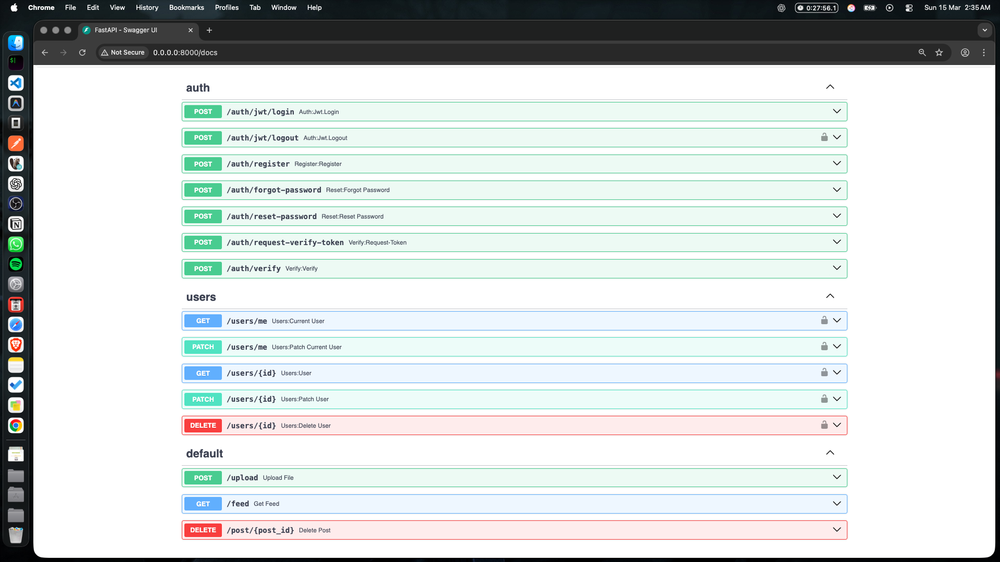
Register New USer
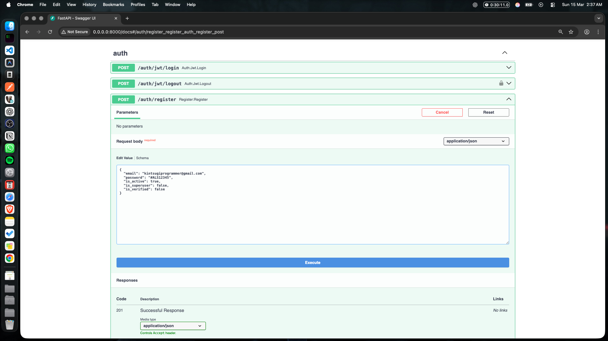
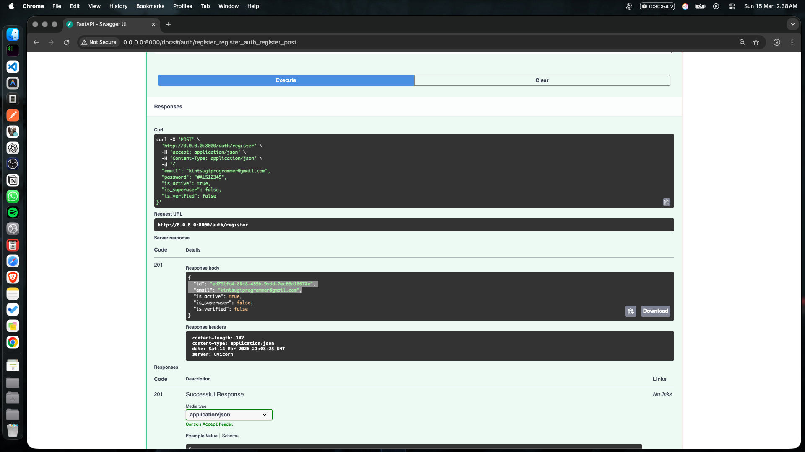
ed791fc4-88c8-439b-9add-7ec66d18678e kintsugiprogrammer@gmail.comALS12345
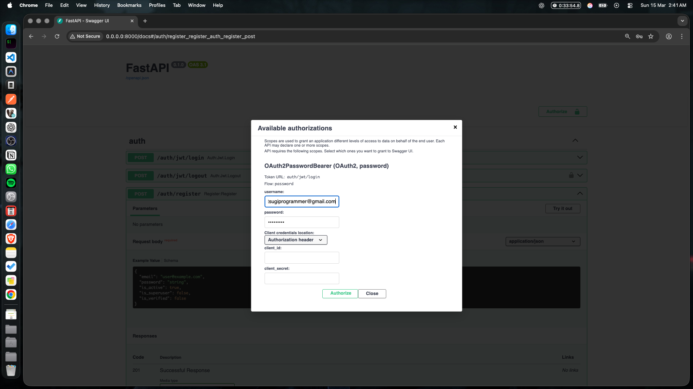
Login
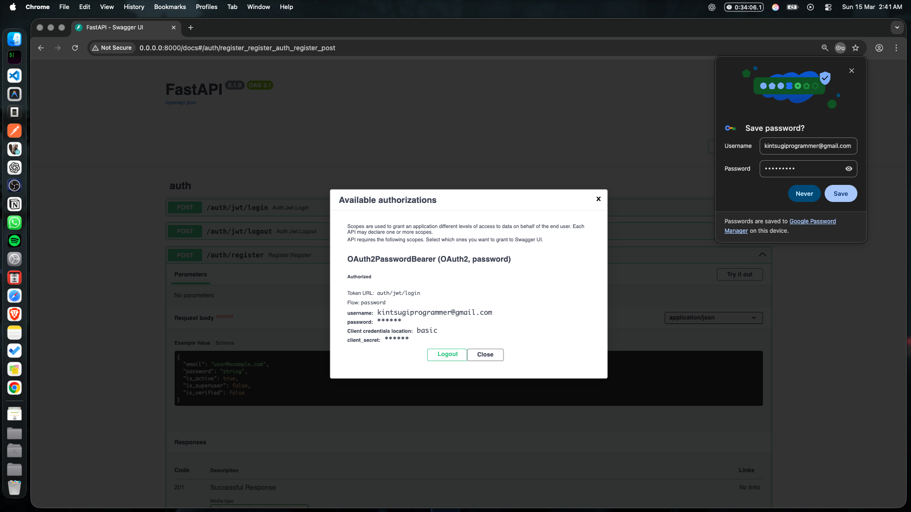
Logged in and got token, get used in any request
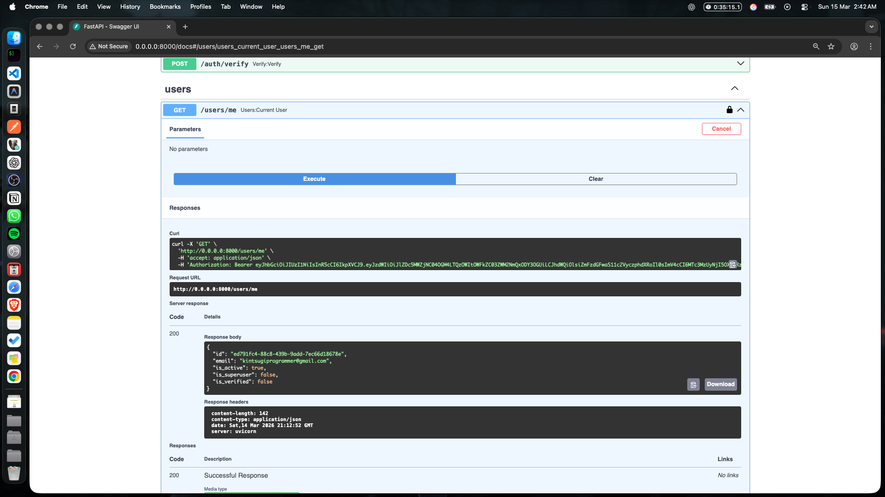
See Current User, and super long token associated in my request
For protecting routes, i can add dependency that for forces router to get the current active user
after it
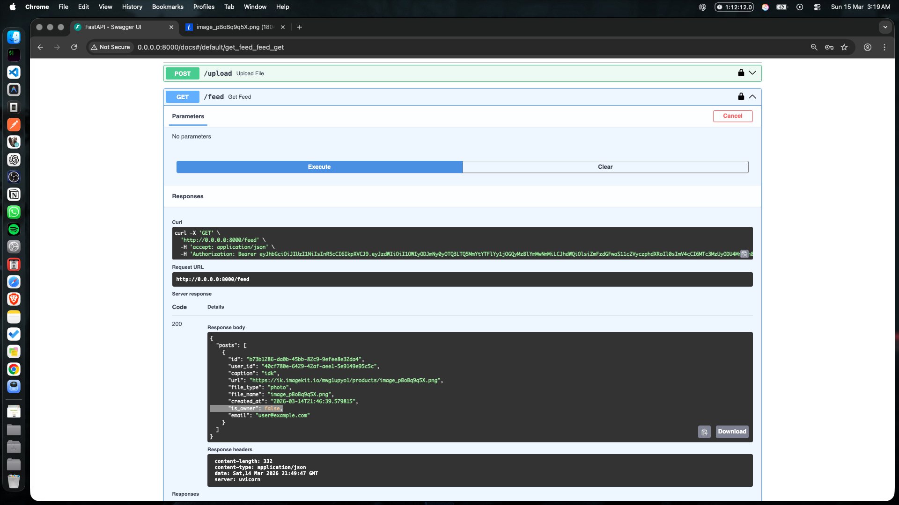
We can see other users posts, no ownership
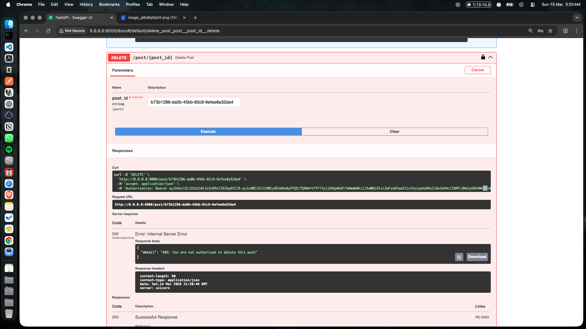
Even if other user try to delete others, it will not be authorised
# users.py
import uuid
from typing import Optional
from fastapi import Depends, Request
from fastapi_users import BaseUserManager, FastAPIUsers, UUIDIDMixin, models
from fastapi_users.authentication import(
AuthenticationBackend,
BearerTransport,
JWTStrategy
)
from fastapi_users.db import SQLAlchemyUserDatabase
from src.db import User, get_user_db
import os
from dotenv import load_dotenv
load_dotenv()
DATABASE_URL = os.getenv("DATABASE_URL")
load_dotenv()
SECRET = os.getenv("JWT_SECRET")
# JWT_SECRET = "....."
# openssl rand -hex 32
# or you can use python to generate a random secret key
# python -c "import secrets; print(secrets.token_hex(32))"
class UserManager(UUIDIDMixin, BaseUserManager[User, uuid.UUID]):
reset_password_token_secret = SECRET
verification_token_secret = SECRET
async def on_after_register(self, user: User, request: Optional[Request] = None):
print(f"User {user.id} has registered.")
async def on_after_request_verify(self, user: User, token: str, request: Optional[Request] = None):
print(f"Verification requested for user {user.id}. Verification token: {token}")
async def get_user_manager(user_db: SQLAlchemyUserDatabase = Depends(get_user_db)):
yield UserManager(user_db)
bearer_transport = BearerTransport(tokenUrl="auth/jwt/login")
def get_jwt_strategy() :
return JWTStrategy(secret=SECRET, lifetime_seconds=3600) # 1hr expiration time for the token ,theres is default value for lifetime_seconds in JWTStrategy, but we can override it here, more time means less security, less time means more security but also less convenience for the user, so you need to find a balance between security and convenience.
auth_backend = AuthenticationBackend(
name="jwt",
transport=bearer_transport,
get_strategy=get_jwt_strategy
)
fastapi_users = FastAPIUsers[User, uuid.UUID](
get_user_manager=get_user_manager,
auth_backends=[auth_backend]
) #
current_active_user = fastapi_users.current_user(active=True)
# after this setup, All JWT related routes are automatically created for us, such as /auth/jwt/login, /auth/jwt/logout, /auth/jwt/refresh, /auth/jwt/verify, etc. We can also create our own custom routes if we want to, but these are the basic routes that are needed for JWT authentication.
# schemas.py
from pydantic import BaseModel # BaseModel is special Func. in Python with Special Features
from fastapi_users import schemas
import uuid
class PostCreate(BaseModel):
title: str
content: str
class PostResponse(BaseModel):
title: str
content: str
# just for inheritance, we can use the BaseUser, BaseUserCreate, BaseUserUpdate from fastapi_users, and then we can create our own UserRead, UserCreate, UserUpdate schemas that inherit from these base schemas, so that we can use them in our API routes and also in our database models, and we can also add any additional fields that we want to these schemas if needed.
class UserRead(schemas.BaseUser[uuid.UUID]):
pass
class UserCreate(schemas.BaseUserCreate):
pass
class UserUpdate(schemas.BaseUserUpdate):
pass
# db.py
from collections.abc import AsyncGenerator
from datetime import datetime
import uuid
from sqlalchemy import Column, String, Text, DateTime, ForeignKey
from sqlalchemy.dialects.postgresql import UUID
from sqlalchemy.ext.asyncio import AsyncSession, create_async_engine, async_sessionmaker
from sqlalchemy.orm import DeclarativeBase, relationship
from fastapi_users.db import SQLAlchemyUserDatabase, SQLAlchemyBaseUserTableUUID
from fastapi import Depends
import os
from dotenv import load_dotenv
load_dotenv()
DATABASE_URL = os.getenv("DATABASE_URL")
# DATABASE_URL = "sqlite+aiosqlite:///./test.db"
class Base(DeclarativeBase): # we can't directly use declarative_base() because we need to use it in async way, so we create a class that inherits from DeclarativeBase and then we can use it to create our models
pass
# we are using SQLAlchemyBaseUserTableUUID because we want to use UUID as our primary key, and it already has the necessary fields for user management, such as email, hashed_password, is_active, is_superuser, etc.
class User(SQLAlchemyBaseUserTableUUID, Base) :
posts = relationship("Post", back_populates="user")
class Post(Base):
__tablename__ = "posts"
id = Column(UUID(as_uuid=True),primary_key=True, default=uuid.uuid4)
user_id = Column(UUID(as_uuid=True),ForeignKey("user.id"),nullable=False) # NEW # FK
caption = Column(Text)
url = Column(String, nullable=False)
file_type = Column(String, nullable= False)
file_name = Column(String, nullable=False)
created_at = Column(DateTime, default=datetime.utcnow)
user = relationship("User",back_populates="posts") # NEW # this is the relationship that allows us to access the user from the post, and also access the posts from the user, it's a bidirectional relationship, we use back_populates to specify the name of the relationship in the other model, so that SQLAlchemy can automatically handle the relationship for us.
# One to many relationship, One User can have many posts
# if wanna flip, then make FK at User table & back_populates
engine = create_async_engine(DATABASE_URL)
async_session_maker = async_sessionmaker(engine, expire_on_commit=False)
async def create_db_and_tables():
async with engine.begin() as conn:
await conn.run_sync(Base.metadata.create_all)
async def get_async_session() -> AsyncGenerator[AsyncSession, None]:
async with async_session_maker() as session:
yield session
async def get_user_db(session: AsyncSession = Depends(get_async_session)):
yield SQLAlchemyUserDatabase(session, User)
# this is a FastAPI dependency that will allow us to get the user database for each request, it will create a new session for each request and close it after the request is done, so that we don't have any connection leaks, and we can ensure that our application is properly cleaned up when it shuts down.
# app.py
from fastapi import FastAPI, HTTPException, File, UploadFile, Depends, Form
from src.schemas import PostCreate, PostResponse, UserRead, UserCreate, UserUpdate # new
from src.db import Post, create_db_and_tables, get_async_session, User # new
from sqlalchemy.ext.asyncio import AsyncSession
from sqlalchemy import select
from contextlib import asynccontextmanager
from src.images import imagekit
# from imagekitio.models.UploadFileRequestOptions import UploadFileRequestOptions
import shutil
import os
import uuid
import tempfile
from src.users import fastapi_users, current_active_user, auth_backend # new
@asynccontextmanager
async def lifespan(app: FastAPI):
await create_db_and_tables() # create db for us, and make sure this is essentially handled correctly and cleanly . at time of exit, it will close the connection to the database, so that we don't have any connection leaks, and we can ensure that our application is properly cleaned up when it shuts down.
yield
application = FastAPI(lifespan=lifespan)
application.include_router(
fastapi_users.get_auth_router(auth_backend),
prefix="/auth/jwt",
tags=["auth"]
) # in my app i want to include the authentication routes provided by fastapi_users, so that i can use JWT authentication in my app, and i want to prefix all the auth routes with /auth/jwt, so that i can easily identify them in my API documentation, and also group them together in the documentation under the "auth" tag.
application.include_router(
fastapi_users.get_register_router(UserRead, UserCreate),
prefix="/auth",
tags=["auth"]
) # this will create the registration route for us, and we can use it to register new users, and we can also specify the UserRead and UserCreate schemas that we want to use for the registration route, so that we can validate the incoming data for the registration route, and also specify the response model for the registration route, so that we can validate the outgoing data for the registration route.
application.include_router(
fastapi_users.get_reset_password_router(),
prefix="/auth",
tags=["auth"]
) # this will create the reset password route for us, and we can use it to reset the password for existing users.
application.include_router(
fastapi_users.get_verify_router(UserRead),
prefix="/auth",
tags=["auth"]
) # this will create the verify route for us, and we can use it to verify for existing users.
application.include_router(
fastapi_users.get_users_router(UserRead, UserUpdate),
prefix="/users",
tags=["users"]
) # this will create the user management routes for us, such as /users/me, /users/{id}, etc. and we can use these routes to manage the users in our application, such as getting the current user, updating the user information, etc. and we can also specify the UserRead and UserUpdate schemas that we want to use for these routes, so that we can validate the incoming data for these routes, and also specify the response model for these routes, so that we can validate the outgoing data for these routes.
@application.post("/upload") # using async, fastapi is async framework
async def upload_file(
file: UploadFile = File(...),
user: User = Depends(current_active_user), # this will ensure that only authenticated users can access this route, and it will also give us the current user object that we can use in our route, so that we can associate the uploaded file with the user who uploaded it, and we can also use the user information for any other purpose that we want in this route, such as logging, etc.
caption: str = Form(""),
session: AsyncSession = Depends(get_async_session) # FastAPI Dependency Injection, it will automatically create a new session for each request and close it after the request is done
):
temp_file_path = None
try:
with tempfile.NamedTemporaryFile(delete=False, suffix=os.path.splitext(file.filename)[1]) as temp_file:
temp_file_path = temp_file.name
shutil.copyfileobj(file.file, temp_file)
upload_result = imagekit.files.upload(
# upload_result = imagekit.upload_file( # old
file=open(temp_file_path, "rb"),
file_name=file.filename,
folder="/products",
tags=["product", "featured"]
# options=UploadFileRequestOptions( # old
# use_unique_file_name=True,
# tags=["backend-upload"]
# )
)
if upload_result and upload_result.url :
# if upload_result.status_code == 200: # old
post = Post(
# endpoint protect
user_id = user.id, # storing user for every single post
# dummy post
caption = caption,
# url = "dummy url",
url = upload_result.url,
# file_type = "photo",
file_type = "video" if file.content_type.startswith("video/") else "photo",
# file_name = "dummy name"
file_name = upload_result.name
)
session.add(post)
await session.commit()
await session.refresh(post)
return post
except Exception as e:
raise HTTPException(status_code=500, detail=str(e))
# pass
finally:
if temp_file_path and os.path.exists(temp_file_path):
os.unlink(temp_file_path)
file.file.close()
# dummy
# post = Post( # dummy post
# caption = caption,
# url = "dummy url",
# file_type = "photo",
# file_name = "dummy name"
# )
# session.add(post) # like staging, post is added to session but not saved
# await session.commit() # like commit, saving the post to the database
# # id and created_at are generated by the database, so we need to refresh the post object to get the updated data from the database, because after commit, the post object is not updated with the data from the database, so we need to refresh it to get the id of the post
# # after commit, the post object is not updated with the data from the database, so we need to refresh it to get the id of the post
# await session.refresh(post) # like refresh, refreshing the post object with the data from the database, so that we can get the id of the post
# return post
@application.get("/feed")
async def get_feed(
session: AsyncSession = Depends(get_async_session)
,user: User = Depends(current_active_user) # protect endpoint
):
result = await session.execute(select(Post).order_by(Post.created_at.desc())) # like select * from posts order by created_at desc, it will return a list of Post objects
posts = [row[0] for row in result.all()] # result.all() will return a list of tuples, where each tuple contains a single Post object, so we need to extract the Post object from the tuple using row[0]
# cursor object is returned by the database, and we need to convert it to a list of Post objects, so that we can return it as a response
result = await session.execute(select(User))
users = [ row[0] for row in result.all()]
users_dict = {u.id: u.email for u in users}
posts_data = []
for post in posts:
posts_data.append({
"id":str(post.id),
"user_id":str(post.user_id),
"caption":post.caption,
"url":post.url,
"file_type":post.file_type,
"file_name":post.file_name,
"created_at":post.created_at.isoformat(),
"is_owner": post.user_id == user.id # this will add a field to the response that indicates whether the current user is the owner of the post or not, so that the client can use this information to determine whether to show edit/delete options for the post or not, because only the owner of the post should be able to edit or delete the post, so we need to provide this information in the response, so that the client can make the appropriate UI decisions based on this information.
,"email": users_dict.get(post.user_id, "Unknown")
})
return {"posts": posts_data}
@application.delete("/post/{post_id}")
async def delete_post(
post_id: str,
session: AsyncSession = Depends(get_async_session),
user: User = Depends(current_active_user) # protect endpoint
):
try:
post_uuid = uuid.UUID(post_id) # convert the post_id string to a UUID object, if the post_id is not a valid UUID, it will raise a ValueError, so we need to handle that exception and return a 400 Bad Request error to the client, because the client has sent an invalid post_id, so we need to inform them about the error in their request
result = await session.execute(select(Post).where(Post.id == post_uuid)) # like select * from posts where id = post_id, it will return a list of Post objects that match the condition, but since id is unique, it will return either one Post object or None
post = result.scalars().first() # scalars() will return a list of Post objects, and first() will return the first Post object from the list, or None if the list is empty
if not post:
raise HTTPException(status_code=404, detail="Post not found")
# endpoint protect
if post.user_id != user.id: # check if the user who is trying to delete the post is the owner of the post, if not, then we need to return a 403 Forbidden error, because the user is not authorized to delete this post
raise HTTPException(status_code=403, detail="You are not authorized to delete this post")
await session.delete(post) # like delete from posts where id = post_id, it will delete the post from the database, but we need to commit the transaction to make sure that the changes are saved to the database, so we need to call session.commit() after deleting the post
await session.commit()
return {"success":True, "message":"Post deleted successfully"}
except Exception as e:
raise HTTPException(status_code=500, detail=str(e))
# old stuff rewamp
# @application.get("/hello-world")
# def hello_world():
# return {"message":"hello world !!!"}
# # text_posts = {
# # 1 : {"title":"new post", "content": "cool test post"}
# # }
# text_posts = {
# 1: {"title": "Morning Coffee", "content": "Started the day with a strong cup of coffee."},
# 2: {"title": "Learning FastAPI", "content": "Building my first API with FastAPI today."},
# 3: {"title": "Debugging Code", "content": "Spent an hour fixing a small bug."},
# 4: {"title": "New Project Idea", "content": "Thinking about building a health tech platform."},
# 5: {"title": "Database Setup", "content": "Installed PostgreSQL and created a new database."},
# 6: {"title": "API Testing", "content": "Testing endpoints using Postman."},
# 7: {"title": "Late Night Coding", "content": "Still coding at midnight."},
# 8: {"title": "Learning Git", "content": "Practicing commits and branches today."},
# 9: {"title": "Reading Docs", "content": "Reading FastAPI documentation."},
# 10: {"title": "Weekend Build", "content": "Working on a small backend project."}
# }
# # @application.get("/posts")
# # def get_all_posts():
# # return text_posts
# @application.get("/post/{id}")
# def get_post(id:int)-> PostResponse:
# if id not in text_posts:
# raise HTTPException(status_code=404, detail="post not found")
# return text_posts.get(id)
# @application.get("/posts")
# def get_all_posts(limit: int = None): # here parameter is written because FastAPI will Auto Document it and Validate it
# if limit:
# return list(text_posts.values())[:limit]
# return text_posts
# @application.post("/post")
# def create_post(post_body: PostCreate) -> PostResponse : # validates incoming (PostCreate) and Outgoing (PostResponse), if not valid so raise error
# new_id = max(text_posts.keys()) + 1
# new_post = { "title": post_body.title , "content" : post_body.content }
# text_posts[new_id] = new_post
# return new_post
ImageKit API URL Transformations
ImageKit allows real-time dynamic manipulation of files directly through query strings or URL paths, enhancing UI flexibility without reprocessing base files.
- Cropping/Sizing:
tr=w-300,h-300directly modifies width and height. - Enhancements:
tr=e-contrast(increases contrast),tr=e-sharpen(sharpens image). - Text/Overlays: Add captions via URL string overlays, modifying sizes using attributes like
font-size_100. - Videos: Output frames as thumbnails via appending
ik-thumbnail.jpg(or requesting specific timeframes like 5 seconds in). Videos can also be cropped into vertical frames with blurred backgrounds, and drastically optimized (e.g., 90% quality compression makes files 3x smaller without major quality loss).
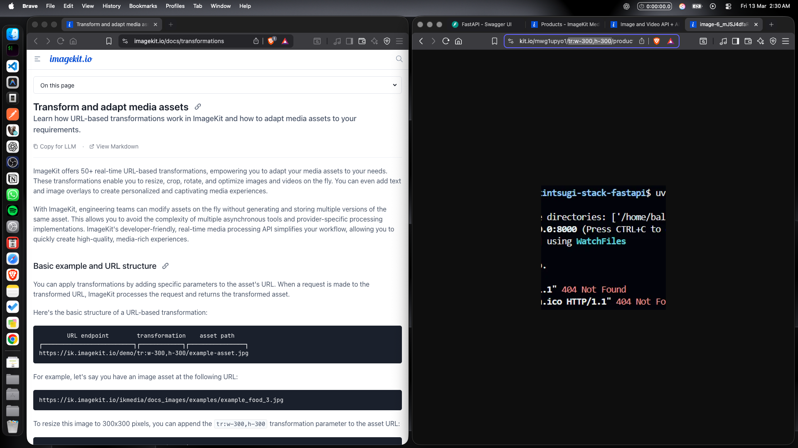
https://ik.imagekit.io/mwg1upyo1/products/image-6_mJSJ4dfaR.png to
- https://ik.imagekit.io/mwg1upyo1/products/image-6_mJSJ4dfaR.png?tr=w-300,h-300
- https://ik.imagekit.io/mwg1upyo1/tr=w-300,h-300/products/image-6_mJSJ4dfaR.png
Front-End Integration (Streamlit context)
A simple frontend like Streamlit interfaces with the backend by executing HTTP operations mapped to the API. Once the backend successfully registers or logs in the user (/auth/jwt/login), the frontend saves the resulting access token into a session state. For any protected operations (like viewing the feed or uploading files), this token is included in the request headers (formatted as Bearer <token>).
Code(s)
# frontend.py
# uv run streamlit run frontend.py
import streamlit as st
import requests
import base64
import urllib.parse
st.set_page_config(page_title="Simple Social", layout="wide")
# Initialize session state
if 'token' not in st.session_state:
st.session_state.token = None
if 'user' not in st.session_state:
st.session_state.user = None
def get_headers():
"""Get authorization headers with token"""
if st.session_state.token:
return {"Authorization": f"Bearer {st.session_state.token}"}
return {}
def login_page():
st.title("🚀 Welcome to Simple Social")
# Simple form with two buttons
email = st.text_input("Email:")
password = st.text_input("Password:", type="password")
if email and password:
col1, col2 = st.columns(2)
with col1:
if st.button("Login", type="primary", use_container_width=True):
# Login using FastAPI Users JWT endpoint
login_data = {"username": email, "password": password}
response = requests.post("http://localhost:8000/auth/jwt/login", data=login_data)
if response.status_code == 200:
token_data = response.json()
st.session_state.token = token_data["access_token"]
# Get user info
user_response = requests.get("http://localhost:8000/users/me", headers=get_headers())
if user_response.status_code == 200:
st.session_state.user = user_response.json()
st.rerun()
else:
st.error("Failed to get user info")
else:
st.error("Invalid email or password!")
with col2:
if st.button("Sign Up", type="secondary", use_container_width=True):
# Register using FastAPI Users
signup_data = {"email": email, "password": password}
response = requests.post("http://localhost:8000/auth/register", json=signup_data)
if response.status_code == 201:
st.success("Account created! Click Login now.")
else:
error_detail = response.json().get("detail", "Registration failed")
st.error(f"Registration failed: {error_detail}")
else:
st.info("Enter your email and password above")
def upload_page():
st.title("📸 Share Something")
uploaded_file = st.file_uploader("Choose media", type=['png', 'jpg', 'jpeg', 'mp4', 'avi', 'mov', 'mkv', 'webm'])
caption = st.text_area("Caption:", placeholder="What's on your mind?")
if uploaded_file and st.button("Share", type="primary"):
with st.spinner("Uploading..."):
files = {"file": (uploaded_file.name, uploaded_file.getvalue(), uploaded_file.type)}
data = {"caption": caption}
response = requests.post("http://localhost:8000/upload", files=files, data=data, headers=get_headers())
if response.status_code == 200:
st.success("Posted!")
st.rerun()
else:
st.error("Upload failed!")
def encode_text_for_overlay(text):
"""Encode text for ImageKit overlay - base64 then URL encode"""
if not text:
return ""
# Base64 encode the text
base64_text = base64.b64encode(text.encode('utf-8')).decode('utf-8')
# URL encode the result
return urllib.parse.quote(base64_text)
def create_transformed_url(original_url, transformation_params, caption=None):
if caption:
encoded_caption = encode_text_for_overlay(caption)
# Add text overlay at bottom with semi-transparent background
text_overlay = f"l-text,ie-{encoded_caption},ly-N20,lx-20,fs-100,co-white,bg-000000A0,l-end"
transformation_params = text_overlay
if not transformation_params:
return original_url
parts = original_url.split("/")
imagekit_id = parts[3]
file_path = "/".join(parts[4:])
base_url = "/".join(parts[:4])
return f"{base_url}/tr:{transformation_params}/{file_path}"
def feed_page():
st.title("🏠 Feed")
response = requests.get("http://localhost:8000/feed", headers=get_headers())
if response.status_code == 200:
posts = response.json()["posts"]
if not posts:
st.info("No posts yet! Be the first to share something.")
return
for post in posts:
st.markdown("---")
# Header with user, date, and delete button (if owner)
col1, col2 = st.columns([4, 1])
with col1:
st.markdown(f"**{post['email']}** • {post['created_at'][:10]}")
with col2:
if post.get('is_owner', False):
if st.button("🗑️", key=f"delete_{post['id']}", help="Delete post"):
# Delete the post
response = requests.delete(f"http://localhost:8000/post/{post['id']}", headers=get_headers())
if response.status_code == 200:
st.success("Post deleted!")
st.rerun()
elif response.status_code == 403:
st.error("You are not authorized to delete this post.")
elif response.status_code == 404:
st.error("Post not found.")
else:
st.error(f"Failed to delete post: {response.status_code} {response.text}")
# Uniform media display with caption overlay
caption = post.get('caption', '')
# if post['file_type'] == 'image':
uniform_url = create_transformed_url(post['url'], "", caption)
st.image(uniform_url, width=300)
# else:
# # For videos: specify only height to maintain aspect ratio + caption overlay
# uniform_video_url = create_transformed_url(post['url'], "w-400,h-200,cm-pad_resize,bg-blurred")
# st.video(uniform_video_url, width=300)
# st.caption(caption)
st.markdown("") # Space between posts
else:
st.error("Failed to load feed")
# Main app logic
if st.session_state.user is None:
login_page()
else:
# Sidebar navigation
st.sidebar.title(f"👋 Hi {st.session_state.user['email']}!")
if st.sidebar.button("Logout"):
st.session_state.user = None
st.session_state.token = None
st.rerun()
st.sidebar.markdown("---")
page = st.sidebar.radio("Navigate:", ["🏠 Feed", "📸 Upload"])
if page == "🏠 Feed":
feed_page()
else:
upload_page()
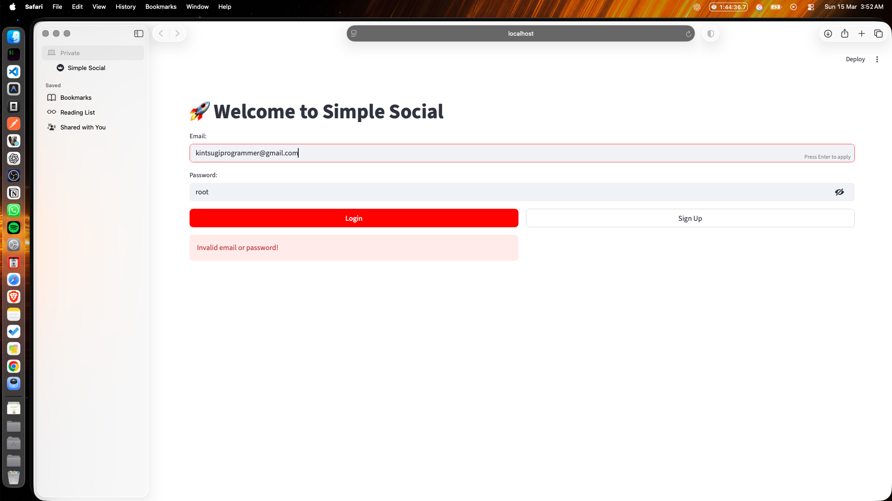
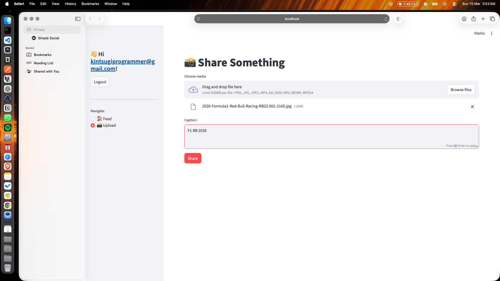
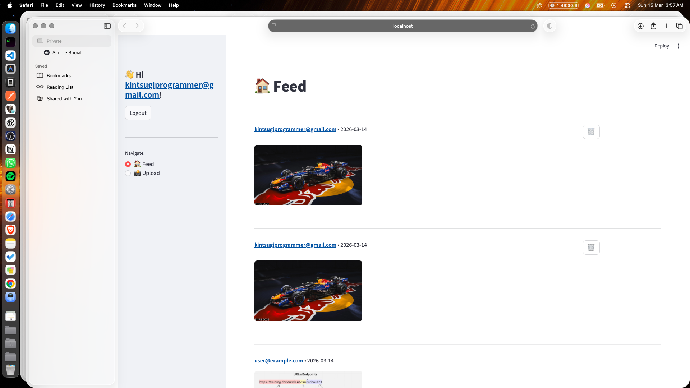
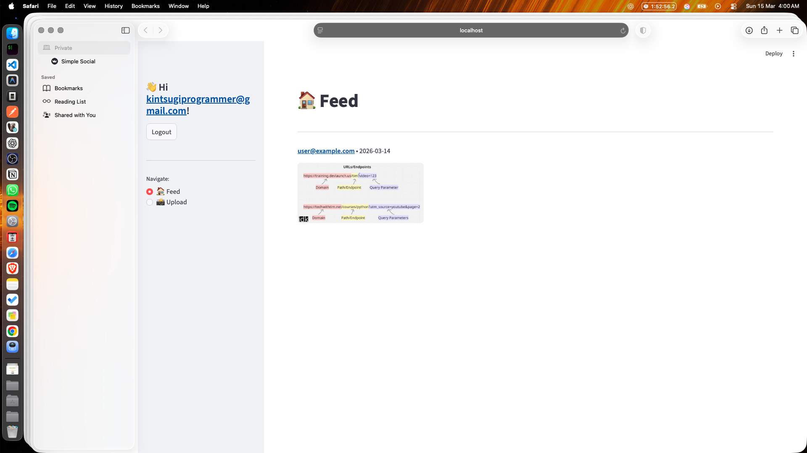